1. Giriş
İTÜ-PPP, bir GNSS istasyonunun konumunu GPS ve Galileo taşıyıcı faz ölçüleriyle hesaplayan ve tamamen web tarayıcısında çalışan bir programdır. Adresi https://salihtatci.github.io/fazPPP/. Kurulum, üyelik ya da şifre yok: sayfayı açıyorsun, dosyalarını seçiyorsun, Hesapla düğmesine basıyorsun.
Dosyaların hiçbir sunucuya gitmez. Hesabı senin bilgisayarındaki tarayıcı yapar (Python + numpy, Pyodide üzerinde). İnternet yalnızca ilk açılışta programın kendisini indirmek için gerekir.
Programın sana verdiği sonuçlar:
- İstasyonun konumu (X, Y, Z ve enlem, boylam, yükseklik): tüm günün tek konumu (statik) ya da her epokta ayrı konum (kinematik)
- Alıcı saat hatası, troposfer gecikmesi, belirsizlikler, DOP değerleri
- İyonosfer (TEC) ve DCB değerleri
- Kod çok yolluluğu (MP1, MP2)
- Tek frekanslı (L1, L2) çözümler ve yayın efemerisiyle kod çözümü
- Kod ölçülerine uygulanan Kalman filtresinin sonuçları
- Verdiğin bir referans koordinatla bütün çözümlerin karşılaştırması
- Hepsinin tek bir PDF raporu
Kılavuz iki kısımdan oluşur:
- Kullanıcı kısmı (Bölüm 2–7, 11–12): Programı kullanmak isteyen herkes için. GNSS bilgisi gerekmez; her tıklama tek tek anlatılır.
- Geliştirici kısmı (Bölüm 8–10): Hesapla düğmesine basınca arka planda hangi dosyada, hangi sırayla ne yapıldığını anlatır. Kodu okumak ya da değiştirmek isteyen için.
Programı ilk kez kullanıyorsan Bölüm 4'teki "Örnek veriyle dene" adımlarıyla başla. Beş dakikada her şeyi görmüş olursun.
2. Başlamadan önce: hangi dosyalar gerekli
Hesap için en az iki dosya gerekir: bir gözlem dosyası ve bir SP3 yörünge dosyası. Diğerleri isteğe bağlıdır; yüklersen sonuç daha iyi ya da daha zengin olur, yüklemezsen program yerine bir varsayım kullanır ve bunu "Uyarılar" kısmında söyler.
| Dosya | Gerekli mi | Ne işe yarar | Yoksa ne olur | Örnek ad |
|---|---|---|---|---|
| Gözlem (.o, .rnx, .crx) | evet | Alıcının kaydettiği kod ve faz ölçüleri. Hesabın ham maddesi. | Hesap yapılmaz | ISTA2400.14o |
| SP3 yörünge | evet | Uyduların her 15 dk'daki (ya da 5 dk) kesin konumu ve saati | Hesap yapılmaz | igs18074.sp3 |
| Saat (CLK) | hayır | Uydu saatlerinin 30 s (ya da 5 s) aralıkla kesin değerleri | Faz çözümü yalnızca SP3 epoklarında (15 dk'da bir) yapılır | COD0MGXFIN_20233070000_01D_30S_CLK.CLK.gz |
| Navigasyon (.n) | hayır | Uyduların yayınladığı yaklaşık yörünge ve Klobuchar iyonosfer katsayıları | Kod çözümü SP3 ile yapılır, Klobuchar çözümleri çıkmaz | ISTA2400.14n |
| Meteoroloji (.m) | hayır | İstasyondaki basınç, sıcaklık, nem | Standart atmosfer kullanılır | ISTA2400.14m |
| ANTEX (.atx) | hayır | Alıcı ve uydu antenlerinin kalibrasyonu | Tarihe göre gömülü igs08.atx ya da igs20.atx kullanılır | igs14.atx |
| DCB | hayır | Uydu kod gecikmeleri (P1−P2) | Uydu DCB'leri veriden kestirilir | P1P21408.DCB |
Tüm dosyalar aynı güne ait olmalı. Gözlem 28 Ağustos 2014'ünse SP3 de o günün SP3'ü olmalı. Farklı günler yüklenirse program "SP3 dosyası gözlem günüyle örtüşmüyor" hatası verir.
Dosya adları nasıl okunur
Dosyayı doğru gün için indirmek için adını okuyabilmek gerekir.
- Eski RINEX 2 adı,
ISTA2400.14o:ISTAistasyon adı,240yılın kaçıncı günü olduğu (28 Ağustos),0oturum,14yıl (2014),odosya türü (o gözlem, n navigasyon, m meteoroloji). Hatanaka sıkıştırmalı olanların sonudolur. - Yeni RINEX 3 adı,
ISTA00TUR_R_20233070000_01D_30S_MO.crx.gz:ISTA00TURistasyon ve ülke,2023307yıl ve yılın günü (3 Kasım 2023),01Dbir günlük dosya,30S30 saniyede bir kayıt,MOçok sistemli gözlem. - Eski SP3 adı,
igs18074.sp3:igsüreten merkez,1807GPS haftası,4haftanın günü (0 Pazar, 4 Perşembe). - Yeni SP3 ve CLK adı,
COD0MGXFIN_20233070000_01D_05M_ORB.SP3.gz:CODCODE merkezi,MGXçok sistemli (Galileo için bunu seç),FINkesin (final) ürün,05M5 dakikada bir. Saat dosyasındaORB.SP3yerineCLK.CLKyazar.
Yılın gününü ve GPS haftasını bulmak için internette "GPS calendar" diye aratman yeterli.
Nereden indirilir
- IGS veri merkezleri: CDDIS (NASA, ücretsiz Earthdata hesabı ister) ve BKG (Almanya) gözlem, navigasyon, SP3 ve CLK dosyalarını tutar.
- CODE (Bern Üniversitesi): MGX SP3 ve CLK ürünleri ile aylık P1−P2 DCB dosyaları.
- SP3 ve CLK'yi aynı merkezden seç. İkisi farklı merkezlerden olursa (örneğin SP3 IGS, CLK CODE) uydu saatleri uyuşmaz; program bunu fark edip uyarır.
Sıkıştırılmış dosyalar
.gz, .Z ve Hatanaka (.crx, .d) dosyalarını açmadan doğrudan yükleyebilirsin; program kendisi açar. .zip ya da .rar içindeki dosyaları ise önce kendin çıkar.
3. Arayüzü tanıyalım
Site tek bir uzun sayfadır. Yukarıdan aşağı kaydırdıkça sırayla şu bölümler gelir:
- Üst çubuk ve giriş ekranı: programın adı, menü, dil seçimi, örnek veri düğmesi
- Dosyalar: dosyaları yüklediğin kutular
- Ayarlar ve Hesapla düğmesi
- Sonuçlar: hesap bitince açılır, sekmelerden oluşur
- Yöntem: hesabın hangi adımlardan oluştuğunun kısa özeti
- Hakkında: programı kimin, ne için yaptığı ve kaynak kodun bağlantısı
Araç çubuğundaki menü bağlantıları seni bu bölümlere götürür. Sonuçlar bölümü ilk açılışta gizlidir; hesap bitmeden görünmez.
Giriş ekranı
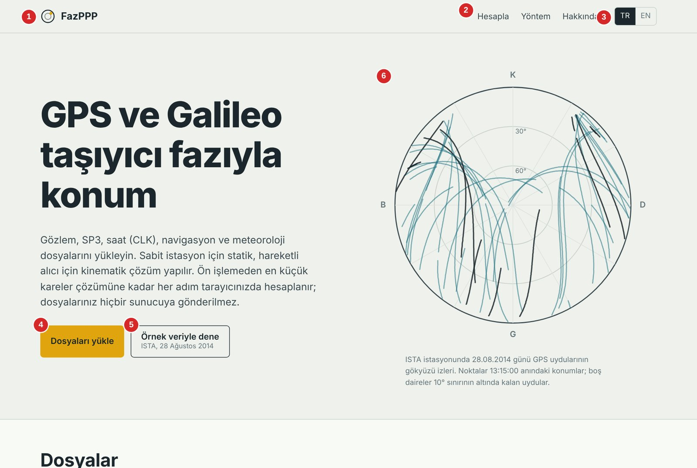
- İTÜ-PPP logosu: Tıklayınca sayfanın en başına döner.
- Menü (Hesapla, Yöntem, Hakkında): İlgili bölüme kaydırır. Bir şey açılmaz ya da hesap başlamaz; yalnızca sayfayı o noktaya götürür.
- TR / EN: Arayüz dilini değiştirir. Sonuçlar ve PDF raporu da seçtiğin dilde çıkar. Hesap bittikten sonra dil değiştirirsen sonuçlar yeniden hesaplanmadan yeni dilde gösterilir.
- Dosyaları yükle: Sayfayı dosya kutularına kaydırır.
- Örnek veriyle dene: ISTA istasyonunun 28 Ağustos 2014 verisini (gözlem, navigasyon, meteoroloji, SP3) kendisi yükler, referans koordinatı doldurur ve hesabı başlatır. Elinde hiç dosya yokken programı denemenin en kolay yolu budur.
- Gökyüzü grafiği: ISTA'da o gün görülen GPS uydularının gökteki izleri. Merkez başının tam üstü (90°), dış çember ufuk (0°); K kuzey, D doğu, G güney, B batı. Yalnızca süs içindir, hesaba katılmaz.
Koyu tema bilgisayarının ayarına göre kendiliğinden açılır; sitede ayrı bir düğmesi yoktur.
4. Adım adım ilk hesap
A. Örnek veriyle (hiç dosyan yokken)
- Tarayıcıda (Chrome, Edge ya da Firefox) https://salihtatci.github.io/fazPPP/ adresini aç.
- Giriş ekranındaki Örnek veriyle dene düğmesine bir kez tıkla. Başka hiçbir şeye dokunma.
- Program ISTA dosyalarını kutulara yerleştirir, epoğu 13:15:00 yapar, referans koordinatı (ITRF2014) doldurur ve hesabı kendisi başlatır.
- İlk açılışta Hesapla düğmesinin yanında "Python ortamı indiriliyor" yazar. Bu 10–20 saniye sürer ve sadece ilk seferde olur. Bekle.
- Ardından düğmenin altında hesap adımları listesi çıkar. Sıradaki adım vurgulanır, bitenler yeşil olur.
- Hesap yaklaşık 4 saniyede biter ve sayfa kendiliğinden Sonuçlar bölümüne kayar. Bu kadar.
B. Kendi dosyalarınla
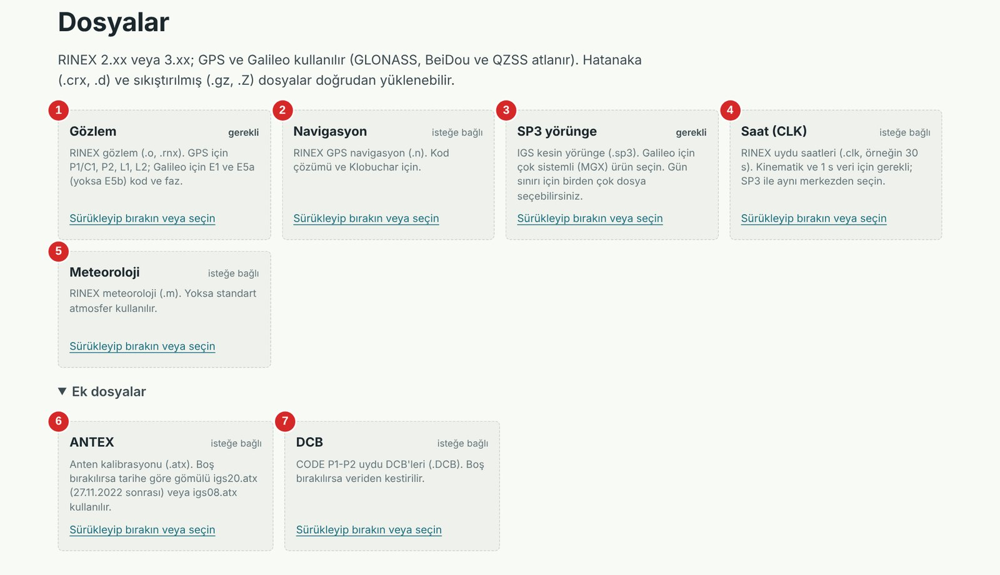
- Sayfada Dosyalar bölümüne in (ya da üst menüde Hesapla'ya tıkla).
- Gözlem dosyanı Gözlem kutusuna (1) sürükleyip bırak. Sürüklemek istemezsen kutudaki "Sürükleyip bırakın veya seçin" yazısına tıklayıp dosyayı bilgisayarından seç.
- SP3 dosyanı SP3 yörünge kutusuna (3) bırak. Bu ikisi zorunlu; kutularında "gerekli" yazar.
- Varsa navigasyon (2), saat (4) ve meteoroloji (5) dosyalarını kendi kutularına bırak.
- ANTEX ve DCB için Ek dosyalar yazısına tıklayıp kutuları aç (6, 7). Çoğu zaman bunları boş bırakabilirsin.
- Her kutu dosya alınca renk değiştirir ve dosyanın adını gösterir. Yanlış dosya koyduysan adın yanındaki Kaldır'a bas.
- Ayarları Bölüm 5'e göre kontrol et. Emin değilsen hiçbirine dokunma; varsayılanlar çoğu veri için doğru.
- Hesapla'ya bas ve sonuçların açılmasını bekle.
Dosyalar yüklendikten sonra kutular şöyle görünür:
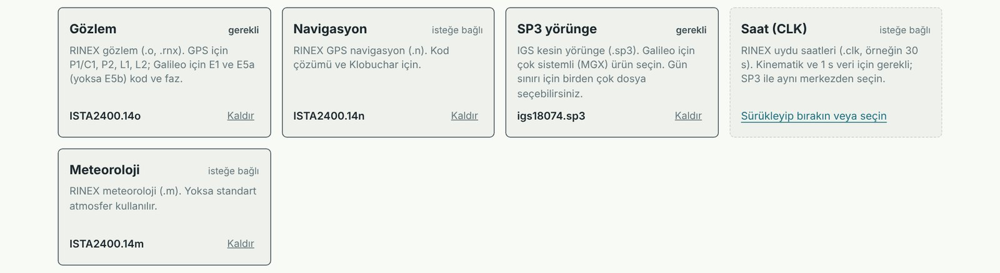
Hesap sürerken Hesapla düğmesinin altında şu liste ilerler:
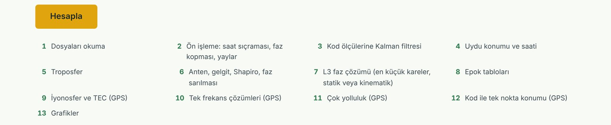
Bilmen gereken birkaç şey:
- SP3 ve saat kutusuna birden çok dosya koyabilirsin (örneğin önceki ve sonraki günün SP3'ü). Diğer kutular tek dosya alır; birden fazla seçersen ilki kullanılır.
- Hesap sürerken Hesapla ve Örnek veriyle dene düğmeleri kilitlenir. İkinci kez basamazsın.
- Bir dosyayı değiştirip yeniden hesaplamak için sayfayı yenilemen gerekmez. Dosyayı değiştir, Hesapla'ya tekrar bas.
- Sayfayı yenilersen yüklediğin dosyalar ve sonuçlar silinir. Hiçbir şey kaydedilmez; saklamak istediğin sonucu Bölüm 7'deki gibi indir.
5. Ayarlar tek tek
Ayarların hepsinin bir varsayılanı vardır ve çoğu veri için onlar doğrudur. Hiçbir ayarı değiştirmeden Hesapla'ya basabilirsin. Aşağıdaki resimde "Gelişmiş" açık görünüyor; normalde kapalıdır.
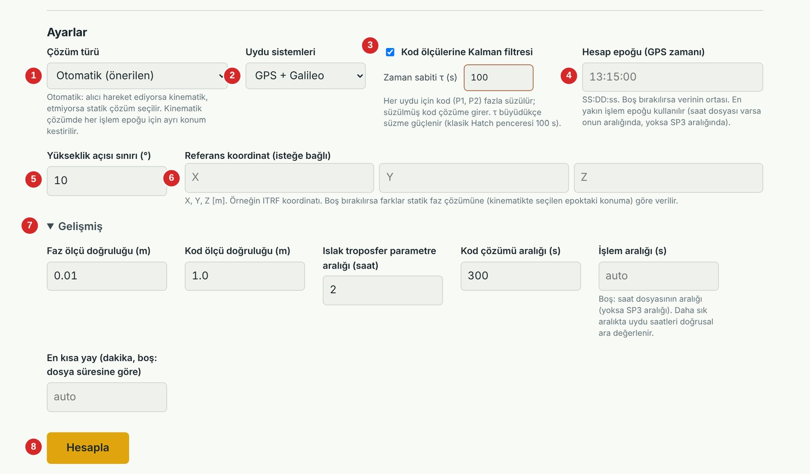
| No | Ayar | Varsayılan | Ne yapar | Ne zaman değiştirirsin |
|---|---|---|---|---|
| 1 | Çözüm türü | Otomatik | Statik: bütün gün için tek konum. Kinematik: her epokta ayrı konum (rota). Otomatik: program karar verir. | Alıcının sabit mi hareketli mi olduğunu kesin biliyorsan |
| 2 | Uydu sistemleri | GPS + Galileo | Galileo ölçülerini de kullanır. Dosyada Galileo yoksa kendiliğinden yalnız GPS kullanılır. | Yalnız GPS sonucu istiyorsan (örneğin ders ödevi) |
| 3 | Kod ölçülerine Kalman filtresi, τ | Açık, 100 s | Kod ölçülerinin gürültüsünü faz yardımıyla azaltır. τ büyüdükçe süzme güçlenir. | Ham kodla sonuç görmek için kapat. Karşılaştırma için τ'yu 30 ya da 300 yap. |
| 4 | Hesap epoğu (GPS zamanı) | Boş (verinin ortası) | Saat, troposfer, DOP, uydu tabloları ve kinematik konum bu anda verilir. SS:DD:ss biçiminde yazılır, örneğin 13:15:00. | Ödevde ya da soruda belirli bir an isteniyorsa |
| 5 | Yükseklik açısı sınırı | 10° | Ufka bundan daha yakın uydular hesaba girmez (çok yolluluk ve atmosfer hatası büyük olduğu için). 0–30° arası girilebilir. | Engelli bir yerdeki istasyonda 15–20° yap; çok az uydu varsa 5°'ye indir |
| 6 | Referans koordinat | Boş | Girdiğin X, Y, Z'ye (metre) göre her çözümün ne kadar farklı olduğu hesaplanır. Boşsa farklar statik faz çözümüne göre verilir. | Doğruluğu bir "doğru" koordinatla (ITRF, IGS) sınamak istiyorsan |
| 7 | Gelişmiş | Kapalı | Aşağıdaki altı ince ayarı açar. | Ne yaptığını biliyorsan |
| 8 | Hesapla | – | Hesabı başlatır. | – |
Otomatik çözüm türü nasıl karar verir: Önce her epokta kodla kaba bir konum hesaplanır. Alıcı bu kaba çözümde 10 m'den fazla yer değiştiriyorsa kinematik seçilir. Değiştirmiyorsa statik çözülür; statik çözüm ölçülere kötü uyarsa kinematik de denenir ve belirgin biçimde daha iyiyse o alınır. Hangi yolun seçildiği Özet sekmesinde bir cümleyle yazılır.
Epok neden "kaydırıldı" diyor: Faz çözümü yalnızca uydu saatinin kesin bilindiği anlarda yapılır. Saat dosyası yoksa bunlar SP3 epoklarıdır (15 dk'da bir: 13:00, 13:15, 13:30…). 13:20:00 yazarsan program en yakın uygun anı kullanır ve bunu uyarı olarak söyler.
Referans koordinatı nasıl yazarsın: Üç kutuya metre cinsinden, ondalık için nokta ya da virgül kullanarak yaz: 4208830.1293. Üçünden biri boşsa referans hiç kullanılmaz. Örnek veri düğmesi bu kutuları doldurur; kendi dosyana geçince bunları silmeyi ya da kendi istasyonunun koordinatıyla değiştirmeyi unutma, yoksa farklar ISTA'ya göre hesaplanır.
Gelişmiş ayarlar
| Ayar | Varsayılan | Ne yapar |
|---|---|---|
| Faz ölçü doğruluğu (m) | 0,01 | Faz ölçülerinin ağırlığını belirler. Küçüldükçe faz daha çok önemsenir. |
| Kod ölçü doğruluğu (m) | 1,0 | Kod ölçülerinin ağırlığını belirler. |
| Islak troposfer parametre aralığı (saat) | 2 | Islak troposferin her kaç saatte bir yeniden kestirileceği. Hava hızlı değişiyorsa 1 yap. |
| Kod çözümü aralığı (s) | 300 | Kod ile tek nokta konumunun kaç saniyede bir hesaplanacağı. |
| İşlem aralığı (s) | Boş (otomatik) | Faz çözümünün kaç saniyede bir yapılacağı. Boşsa saat dosyasının aralığı, o da yoksa SP3 aralığı kullanılır. |
| En kısa yay (dakika) | Boş (otomatik) | Bundan kısa kesintisiz izleme parçaları hesaba girmez. Normalde 10 dk; kısa dosyalarda program kendisi düşürür. |
6. Sonuç sekmeleri
Hesap bitince Sonuçlar bölümü açılır. Üstte sekmeler vardır; birine tıklayınca altındaki içerik değişir. Önce Özet sekmesine bak: aslında sorulan şey (istasyonun konumu) oradadır. Diğer sekmeler o sonuca nasıl varıldığını adım adım gösterir.
Aşağıdaki bütün ekran görüntüleri "Örnek veriyle dene" sonucundan alındı (ISTA, 28.08.2014, epok 13:15:00).
Her sekmede ortak olan üç şey:
- CSV düğmesi: Her tablonun sağ üstünde bulunur ve o tabloyu Excel'de açılabilir bir dosya olarak indirir.
- Grafikler: Fareyi bir noktanın üzerine getirince değerini gösterir. Fareyle bir alan seçersen o alana yakınlaşır; çift tıklayınca eski hale döner. Grafiğin altındaki açıklama kısmında (lejant) bir isme tıklarsan o seri gizlenir.
- Turuncu kesikli çizgi: Grafiklerde seçtiğin hesap epoğunu gösterir.
Özet
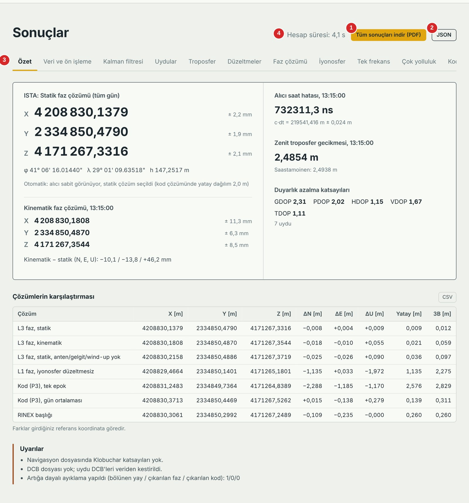
Resimdeki numaralar: (1) bütün sonuçların PDF raporu, (2) ham sonuç dosyası JSON, (3) sekmeler, (4) hesabın kaç saniye sürdüğü.
- Sol üst kutu, statik faz çözümü: İstasyonun bütün günün verisiyle bulunan konumu. Bu, programın asıl cevabıdır. Her koordinatın yanındaki "± 2,2 mm" o koordinatın standart sapmasıdır. Altında aynı nokta enlem (φ), boylam (λ) ve elipsoit yüksekliği (h) olarak yazar.
- Kinematik faz çözümü: Yalnız seçtiğin epoktaki ayrı konum. Bir anlık veriyle bulunduğu için statikten daha az kesindir (burada ± 6–11 mm). Alt satırdaki "Kinematik − statik" ikisinin farkıdır.
- Sağ kutu: Alıcı saat hatası (nanosaniye ve metre karşılığı), zenit troposfer gecikmesi (ZTD; yanında karşılaştırma için Saastamoinen model değeri) ve DOP değerleri. DOP'lar uydu geometrisinin ne kadar iyi olduğunu söyler; 1'e yakın iyi, 5'in üstü kötüdür.
- Çözümlerin karşılaştırması tablosu: Programın yaptığı bütün çözümler alt alta. ΔN kuzey, ΔE doğu, ΔU yukarı yönündeki farktır; Yatay ve 3B toplam uzaklıktır. Hepsi metre ve referans koordinata göre. Örnekte "L3 faz, statik" satırı 3B 0,012 m, yani ITRF koordinatından 1,2 cm uzakta. "Kod (P3), tek epok" ise 2,8 m. Fazla kod arasındaki farkı bu tablo gösterir.
- Uyarılar: Eksik dosya ya da programın yaptığı bir varsayım buraya yazılır. Hata değildir ama mutlaka oku; örneğin "DCB dosyası yok; uydu DCB'leri veriden kestirildi" demek, o değerin dosyadan değil hesaptan geldiği demektir.
Kinematik çözüm seçildiyse (hareketli alıcı) Özet'ten hemen sonra bir Kinematik rota sekmesi gelir. Orada yatay rota haritası, zamana göre N/E/U farkları, standart sapmalar, uydu sayısı ve PDOP grafikleri ile her epoğun konumunu veren tablo bulunur. Tablo en çok 400 satır gösterir; CSV bütün epokları içerir.
Veri ve ön işleme
Gözlem dosyasının doğru okunup okunmadığını ve verinin hesaptan önce nasıl temizlendiğini gösterir.
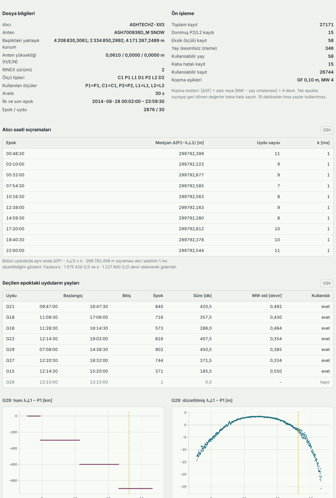
- Dosya bilgileri: Alıcı ve anten modeli, başlıktaki yaklaşık konum, anten yüksekliği, RINEX sürümü, ölçü tipleri, kayıt aralığı, ilk ve son epok. Burada tuhaf bir şey (yanlış tarih, 0 anten yüksekliği) görürsen yanlış dosya yüklemiş olabilirsin.
- Ön işleme sayıları: Toplam kayıt (bir uydunun bir epoktaki ölçüsü bir kayıttır), donmuş (değişmeden tekrarlanan) kayıtlar, eksik ölçülü kayıtlar, yay sayısı ve kullanılabilir yaylar, kaba hatalı kayıtlar. Yay, bir uydunun kesintisiz izlendiği süredir. Faz kopması ya da boşluk olunca yay biter, yenisi başlar.
- Alıcı saati sıçramaları tablosu: Bazı alıcılar saatlerini zaman zaman tam 1 milisaniye düzeltir. Bu, bütün uydularda aynı anda yaklaşık 299 792 m'lik bir sıçrama olarak görünür. Program bunları bulup faza geri ekler. ISTA'da gün boyunca 10 tane var.
- Seçilen epoktaki uyduların yayları: O anda görülen her uydunun yayının ne zaman başlayıp bittiği ve hesaba girip girmediği. "Kullanıldı: hayır" genelde yayın çok kısa ya da uydunun çok alçakta olduğu anlamına gelir.
- Grafikler: Soldaki "ham λ₁L1 − P1" grafiğindeki basamaklar saat sıçramalarıdır. Sağdaki düzeltilmiş grafikte basamaklar kaybolur ve yalnız iyonosferin yavaş değişimi kalır. En alttaki GF ve MW grafikleri faz kopması testinin kullandığı kombinasyonlardır; düzgün eğriler kopma olmadığını, ani bir sıçrama kopma olduğunu gösterir.
Kalman filtresi
Ayarlarda Kalman filtresi açıksa (varsayılan) bu sekme görünür. Kod ölçülerinin filtreyle ne kadar iyileştiğini gösterir.
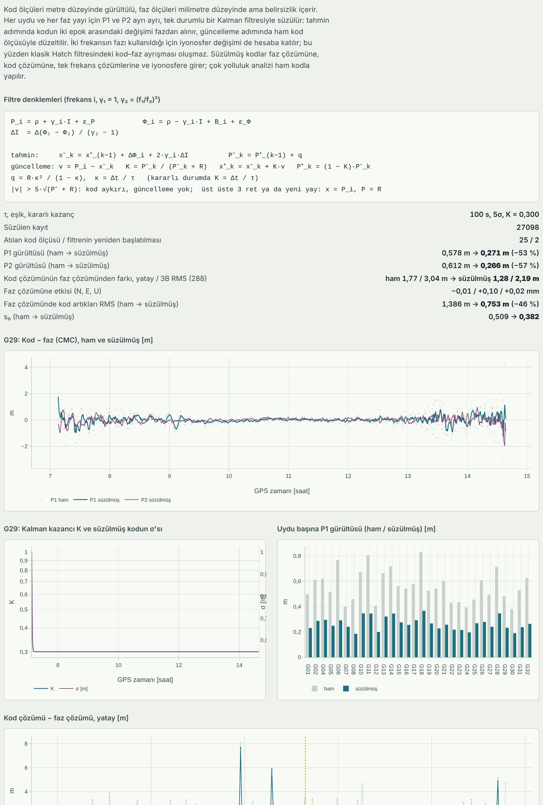
- Üstteki yazı ve denklemler: Filtrenin ne yaptığının kısa anlatımı. Basitçe: kod ölçüsü metre düzeyinde gürültülüdür ama belirsizliği yoktur; faz milimetre düzeyinde temizdir ama bilinmeyen bir sabit içerir. Filtre, kodun epoktan epoğa ne kadar değişeceğini fazdan öğrenir ve kodu buna göre yumuşatır.
- Sayılar: Örnekte P1 gürültüsü 0,578 m'den 0,271 m'ye iner (%53 azalma), P2'ninki %57 azalır. "Faz çözümüne etkisi" ise sadece birkaç milimetrenin onda biridir; filtre asıl olarak kod çözümünü iyileştirir.
- Kod − faz (CMC) grafiği: Gri dağınık noktalar ham kod gürültüsü, düzgün çizgi süzülmüş kod. Çizgi ne kadar düzgünse filtre o kadar iyi çalışıyor.
- Kalman kazancı grafiği: Yay başında K = 1'dir (filtre ham koda güvenir), zamanla Δt/τ değerine (burada 0,3) iner. σ da buna paralel azalır.
-
Uydu başına gürültü tablosu ve grafiği: Her uydu için ham ve süzülmüş gürültü ile kaç kod ölçüsünün aykırı diye atıldığı.
-
Kod çözümü − faz çözümü grafiği: Kodla bulunan konumun faz çözümünden yatayda ne kadar uzak olduğu; gri ham kodla, renkli süzülmüş kodla.
Uydular
Seçilen epokta her uydunun konumu ve saati.
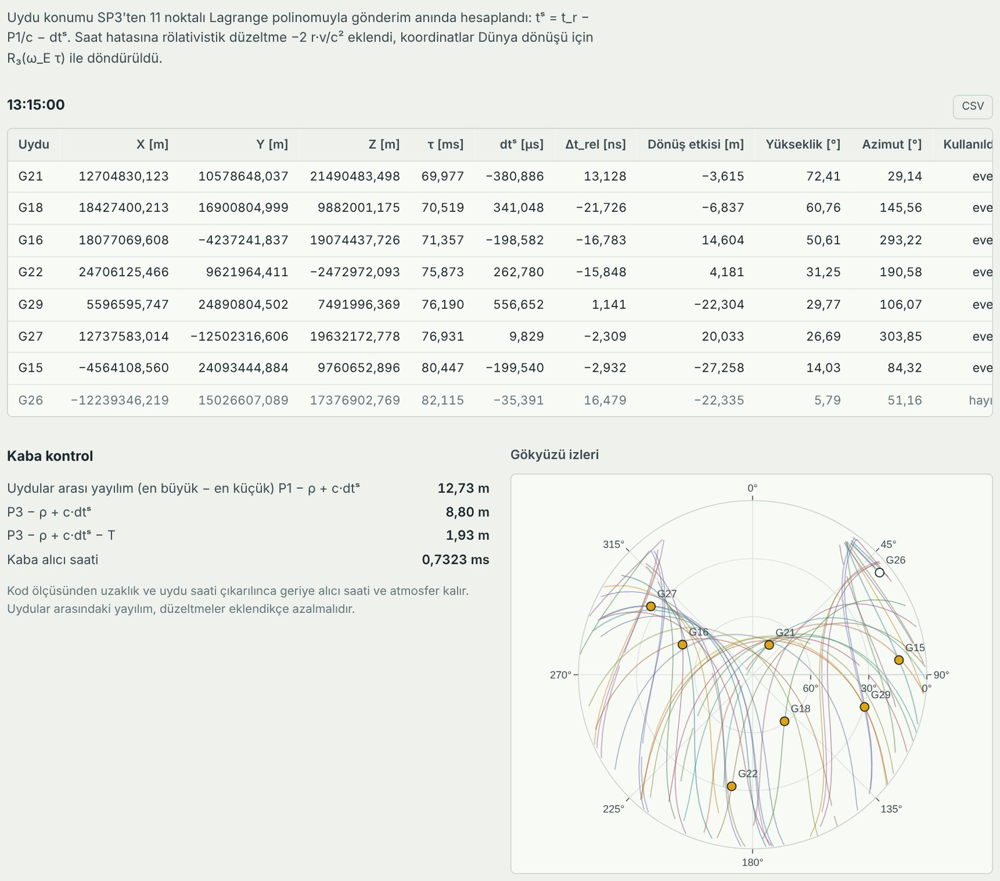
- Tablo: Her uydunun X, Y, Z koordinatı (sinyali gönderdiği andaki), sinyalin yolda geçirdiği süre τ (yaklaşık 70–80 ms), uydu saat hatası, rölativistik düzeltme, Dünya dönüşü etkisi, yükseklik ve azimut açısı.
- Kaba kontrol: Kod ölçüsünden uzaklık çıkarılınca geriye alıcı saati ve atmosfer kalmalıdır. Uydular arasındaki yayılım düzeltme eklendikçe küçülmelidir (örnekte 12,7 m → 8,8 m → 1,9 m). Küçülmüyorsa SP3 dosyası yanlış gündendir ya da gözlemle uyuşmuyordur.
- Gökyüzü grafiği: Uyduların gökteki izleri, seçilen epoktaki konumları nokta olarak.
Troposfer
Atmosferin alt katmanının sinyali ne kadar geciktirdiği.
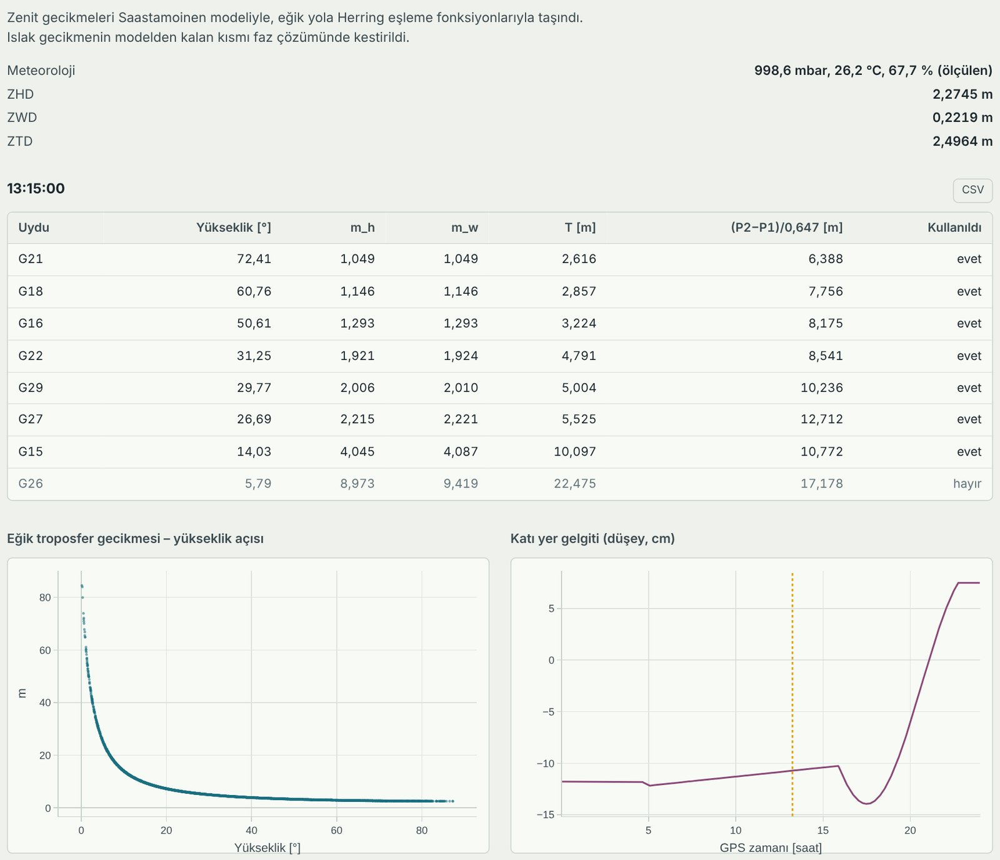
- Meteoroloji: Kullanılan basınç, sıcaklık ve nem; yanında "ölçülen" (dosyadan) ya da "standart atmosfer" yazar.
- ZHD, ZWD, ZTD: Başucu doğrultusunda kuru, ıslak ve toplam gecikme (metre). Tipik ZTD 2,3–2,6 m'dir.
- Tablo: Her uydu için eşleme fonksiyonları (m_h, m_w) ve eğik yoldaki toplam gecikme T. Alçak uydularda gecikme çok büyür (5,8°'deki G26'da 22 m).
- Grafikler: Eğik gecikmenin yükseklik açısıyla değişimi ve katı yer gelgitinin gün içindeki düşey hareketi (cm).
Düzeltmeler
Küçük ama santimetre doğruluğu için şart olan düzeltmeler: anten, gelgit, Shapiro, faz sarılması.
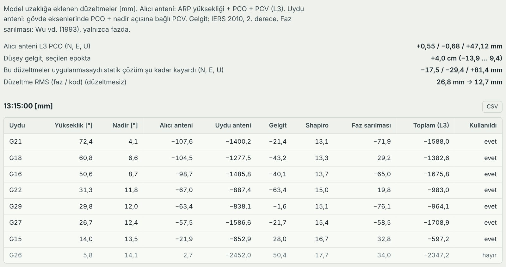
- Alıcı anteni L3 PCO: Antenin elektriksel merkezinin fiziksel referans noktasından ne kadar uzakta olduğu (örnekte yukarı 47 mm).
- "Bu düzeltmeler uygulanmasaydı...": En öğretici satır. Bu düzeltmeler olmasa statik konum yukarı yönde 8 cm kayardı.
- Tablo: Seçilen epokta her uydu için her düzeltmenin milimetre cinsinden değeri ve toplamı.
Faz çözümü
Konumun bulunduğu en küçük kareler hesabının ayrıntıları.
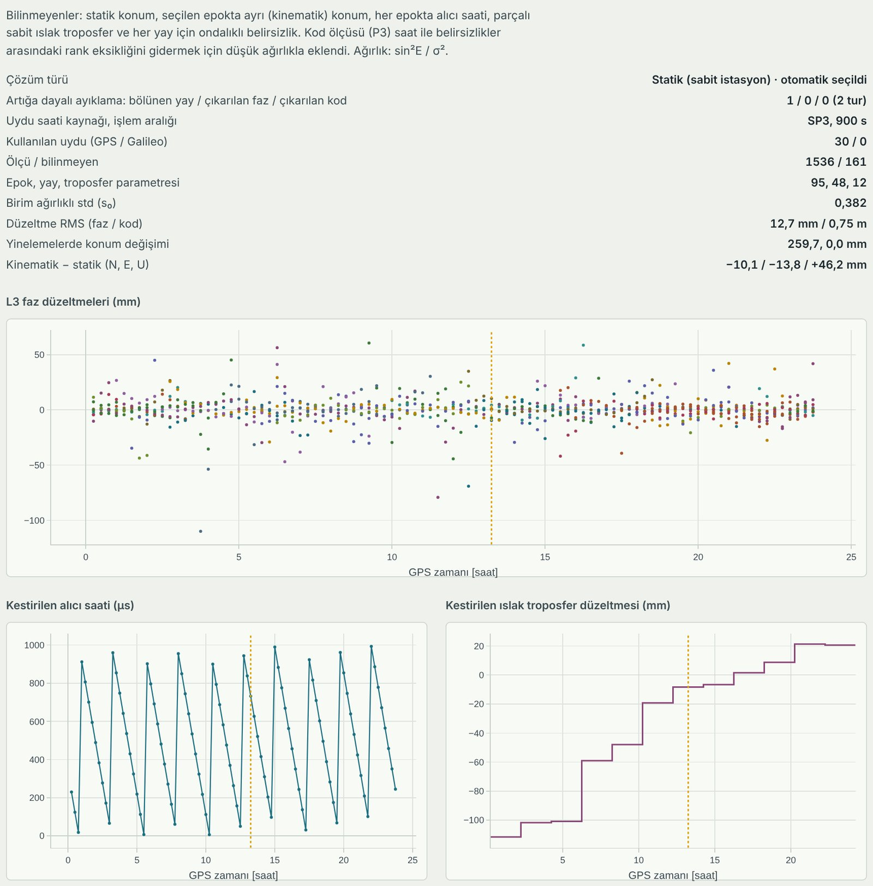
- Çözüm türü: Statik mi kinematik mi çözüldüğü, otomatik seçildiyse bu da yazar.
- Ölçü / bilinmeyen: Kaç ölçüyle kaç bilinmeyen çözüldüğü (örnekte 1536 ölçü, 161 bilinmeyen).
- s₀ (birim ağırlıklı standart sapma): Modelin ölçülere ne kadar uyduğunu söyler. 1 civarı ya da altı iyidir; 3'ün üstü bir şeylerin ters gittiğini gösterir.
- Düzeltme RMS (faz / kod): Ölçülerle modelin ortalama farkı. Faz için 1–2 cm normaldir.
- Artığa dayalı ayıklama: Çözümden sonra büyük artık veren ölçüler bulunup çıkarılır ya da yay bölünür, sonra çözüm tekrarlanır. Kaç tane yapıldığı burada yazar.
- Grafikler: Faz düzeltmeleri (zamana karşı, sıfır etrafında dağılmalı), kestirilen alıcı saati ve ıslak troposfer düzeltmesi.
İyonosfer
Atmosferin üst katmanındaki elektron miktarı (TEC) ve kod gecikmeleri (DCB).
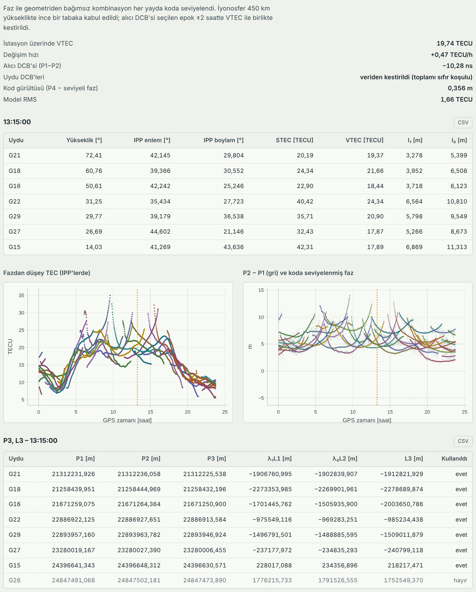
- VTEC: İstasyonun tam üstündeki düşey toplam elektron içeriği, TECU biriminde. Örnekte 19,7 TECU; gündüz yüksek, gece düşüktür.
- Alıcı DCB, uydu DCB'leri: Alıcı ve uydu donanımının P1 ile P2 arasında yarattığı sabit gecikme farkı. DCB dosyası yüklediysen uydu değerleri dosyadan, yüklemediysen veriden kestirilir.
- Tablo: Her uydu için iyonosfer delme noktası (IPP) konumu, eğik (STEC) ve düşey (VTEC) elektron içeriği ve L1, L2 iyonosfer gecikmesi (metre).
- Grafikler: Gün boyunca VTEC ve koda seviyelenmiş faz. Altta seçilen epoktaki P1, P2, P3, L1, L2, L3 değerlerinin tablosu var.
Tek frekans
Yalnız L1 (ya da L2) fazıyla çözüm yapılırsa ne olacağını gösterir. İyonosfer bu durumda düzeltilmezse konum metrelerce kayar.
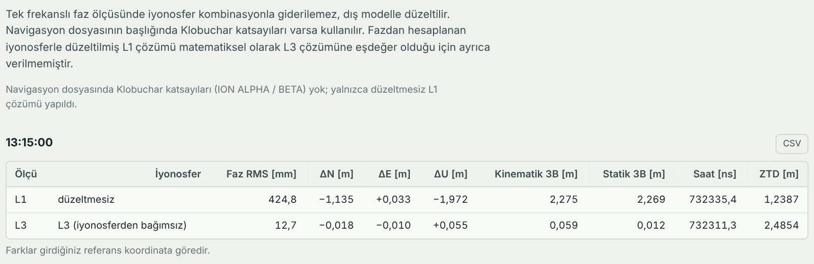
Navigasyon dosyasında Klobuchar katsayıları varsa Klobuchar modeliyle düzeltilmiş L1 ve L2 çözümleri de çıkar. ISTA'nın navigasyon dosyasında bu katsayılar yok; bu yüzden yalnız düzeltmesiz L1 var ve 2,3 m hatalı. Aynı tabloda karşılaştırma için L3 çözümü de yer alıyor.
Çok yolluluk
Kod ölçülerinin binalardan, zeminden yansıyarak gelen sinyallerden ne kadar etkilendiği.
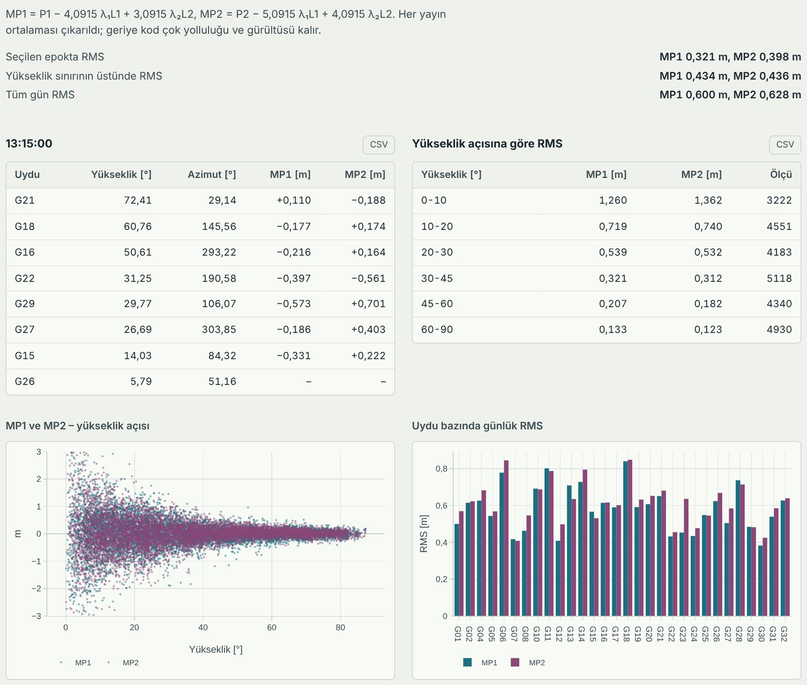
- MP1, MP2: Kod ölçüsünden fazı çıkarıp yay ortalamasını atınca kalan, yani kod çok yolluluğu ve gürültüsü. Bu analiz ham kodla yapılır, Kalman filtresinden etkilenmez.
- Yükseklik açısına göre RMS tablosu: En öğretici kısım. Ufka yakın uydularda (0–10°) 1,3 m olan değer, başucuna yakın uydularda (60–90°) 0,13 m'ye iner. Yükseklik açısı sınırının nedeni budur.
- Grafikler: MP1 ve MP2'nin yükseklik açısıyla dağılımı ve her uydunun günlük RMS'i.
Kod çözümü
Faz kullanmadan, yalnız kodla (P3) her epokta ayrı ayrı yapılan klasik tek nokta konumu. Faz çözümünün ne kadar daha iyi olduğunu görmek için vardır.
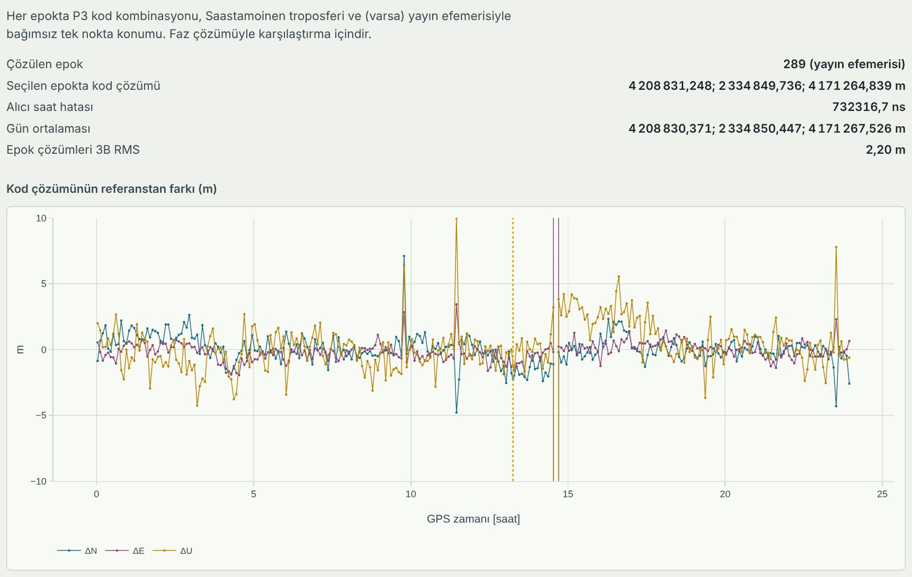
Navigasyon dosyası yüklediysen uydu konumları yayın efemerisinden, yüklemediysen SP3'ten alınır. Seçilen epoktaki konum, gün ortalaması ve epok çözümlerinin 3B RMS'i (örnekte 2,2 m) verilir. Grafik her epoktaki N, E, U farkını gösterir.
7. Sonuçları indirme
Sayfayı kapatınca ya da yenileyince sonuçlar silinir. Saklamak için üç yol var:
| Düğme | Nerede | Ne indirir | Dosya adı | Kim için |
|---|---|---|---|---|
| Tüm sonuçları indir (PDF) | Sonuçlar başlığının sağı, sarı düğme | Bütün sekmeler, tablolar ve grafiklerle tek bir rapor | itu-ppp_ISTA_131500.pdf | Herkes; ödeve ya da rapora eklemek için |
| JSON | PDF düğmesinin yanı | Bütün sayısal sonuçlar, tek dosyada, makine okunur biçimde | itu-ppp_ISTA_131500.json | Sonuçlarla kendi programında (Python, MATLAB) çalışacak olan |
| CSV | Her tablonun sağ üstü | Yalnız o tablo | tablonun adı.csv | Excel'de grafik ya da tablo yapacak olan |
Dosya adındaki ISTA istasyon adı, 131500 ise hesap epoğudur (13:15:00).
PDF nasıl alınır:
- Hesabın bitmesini bekle.
- Sayfada önce raporun hangi dilde olmasını istediğini seç (üstteki TR / EN). PDF ekrandaki dilde çıkar.
- Tüm sonuçları indir (PDF) düğmesine bas.
- Düğmenin yazısı "PDF hazırlanıyor…" olur. 10 saniye kadar bekle; bu sırada başka bir şeye basma.
- Dosya tarayıcının İndirilenler klasörüne kaydedilir.
PDF'in ilk sayfasında yüklediğin dosyaların adları, kullandığın ayarlar ve raporun oluşturulma zamanı yazar. Sonra her sekme sırayla gelir. Her sayfanın altında sayfa numarası vardır. ISTA örneğinde rapor 15 sayfa civarındadır.
PDF ilk kez oluşturulurken gereken kütüphane internetten indirildiği için internet bağlantısı açık olmalıdır.
8. Perde arkası: Hesapla'ya basınca hangi dosyada ne yapılıyor
Bu bölüm kodu okumak ya da değiştirmek isteyenler için. Kaynak kod GitHub'da: github.com/salihtatci/fazPPP. Program iki dille yazılmış: ekranı JavaScript, hesabın tamamını Python (yalnız numpy) yapar. Python, Pyodide sayesinde tarayıcının içinde çalışır; sunucu yoktur.
Sol üstteki ekran dosyaları ve ayarları Worker'a verir; hesabı Python paketi yapar ve sonuç JSON olarak ekrana döner.
8.1 Dosyalar ve görevleri
| Dosya | Dil | Görevi |
|---|---|---|
| index.html | HTML | Sayfanın iskeleti: kutular, ayar alanları, düğmeler, boş sonuç alanı |
| assets/style.css | CSS | Görünüm: renkler, yazı tipleri, koyu tema, telefon uyumu |
| assets/i18n.js | JavaScript | Ekrandaki bütün yazıların Türkçe ve İngilizce karşılıkları ve hata mesajları |
| assets/app.js | JavaScript | Ekranın beyni: dosyaları okur ve açar (.gz, .Z), ayarları toplar, hesabı başlatır, sonuç sekmelerini, tabloları, grafikleri ve PDF'i üretir |
| worker.js | JavaScript | Ayrı iş parçacığı (Web Worker). Pyodide'i ve numpy'ı yükler, Python kodunu tarayıcının sanal diskine yazar, hesabı çağırır. Hesap sürerken sayfa donmasın diye ayrıdır. |
| py/web_entry.py | Python | Köprü: JavaScript'ten gelen JSON metni alır, hesabı çağırır, sonucu ya da hatayı JSON olarak geri verir |
| py/cli.py | Python | Aynı hesabı tarayıcı olmadan, komut satırından çalıştırır (Bölüm 10) |
| py/gnssfaz/pipeline.py | Python | Hesabın yöneticisi. run() fonksiyonu bütün adımları sırayla çağırır ve sonuç sözlüğünü kurar |
| py/gnssfaz/readers.py | Python | Dosya okuyucular: read_obs, read_nav, read_met, read_sp3, read_clk, read_antex, read_dcb |
| py/gnssfaz/crinex.py | Python | Hatanaka sıkıştırmalı gözlem dosyasını açar (crx2rnx) |
| py/gnssfaz/preprocess.py | Python | Ön işleme: donmuş kayıtlar, saat sıçramaları, GF/MW/LLI ile faz kopması, yaylar (preprocess) |
| py/gnssfaz/codefilter.py | Python | Kod ölçülerine Kalman filtresi (kalman_code_filter) ve gürültü istatistikleri |
| py/gnssfaz/orbit.py | Python | SP3 Lagrange ara değerlemesi (sp3_interp, sp3_clock) ve yayın efemerisi (bc_position, bc_clock) |
| py/gnssfaz/corrections.py | Python | Modeller: Saastamoinen, Herring, Klobuchar, alıcı ve uydu anteni, katı yer gelgiti, Shapiro, faz sarılması |
| py/gnssfaz/estimate.py | Python | En küçük kareler: faz + kod çözümü (phase_solution), kod tek nokta konumu (spp_epoch), DOP (dop) |
| py/gnssfaz/geo.py | Python | Koordinat işleri: XYZ ↔ enlem/boylam, N-E-U dönüşü, yükseklik/azimut, Güneş ve Ay konumu |
| py/gnssfaz/timeutil.py, const.py | Python | GPS zamanı dönüşümleri; ışık hızı, frekanslar, Dünya dönüş hızı gibi sabitler |
| data/igs08.atx.gz, data/igs20.atx.gz | veri | Gömülü anten kalibrasyonları |
| examples/ista_2014_240/ | veri | Örnek ISTA dosyaları |
8.2 Bir hesap baştan sona: düğmeden ekrana
- Düğmeye basılır (app.js,
run): Zorunlu iki dosya var mı diye bakılır. Ayarlarparams()ile toplanır. Dosyaların metni ve ayarlar Worker'a mesaj olarak gönderilir. - Dosyalar daha önce açılmıştır (app.js,
readFileText): Kullanıcı dosyayı kutuya bıraktığı anda .gz ve .Z açılıp düz metne çevrilir. - Python ortamı hazırlanır (worker.js,
boot): İlk seferde Pyodide ve numpy indirilir,py/manifest.json'daki Python dosyaları ve gömülü ANTEX dosyaları sanal diske yazılır. - Hesap çağrılır (web_entry.py,
run_json): Gelen JSON çözülür vepipeline.run()çağrılır. Her adım başladığındaprogressfonksiyonu ekrana haber verir; adım listesinin ilerlemesi bu sayede olur. - Hesap yapılır (pipeline.py,
run): 8.3'teki 15 adım sırayla çalışır ve bütün sonuçlar tek bir sözlükte (dict) toplanır. - Sonuç geri döner: Sözlük JSON metnine çevrilip Worker üzerinden app.js'e gönderilir. Hata olduysa
{ok: false, code, message}gelir;codei18n.js'tekierr.<code>mesajıyla eşleşip kullanıcıya anlaşılır bir cümle olarak gösterilir. - Ekran çizilir (app.js,
renderResults): Her sekme kendi fonksiyonuyla üretilir:pSummary,pPre,pKf,pOrbit,pAtm,pCorr,pL3,pIono,pSingle,pMp,pSpp,pKin. Grafikler Plotly ile, sekme ilk açıldığında çizilir. - PDF istenirse (app.js,
exportPdf): jsPDF ve jspdf-autotable kütüphaneleri o anda indirilir, ekrandaki sekmeler sırayla dolaşılıp tablolar ve grafik resimleri PDF'e yazılır. Türkçe karakterler için DejaVu Sans yazı tipi gömülür.
8.3 Hesap zinciri adım adım (pipeline.py içinde)
run() fonksiyonunun içinde her adım # ---- 4. uydu konum ve saati gibi numaralı bir yorum satırıyla başlar. Koddaki yorum numaraları aşağıdaki sırayla birebir aynı değildir (sonradan eklenen adımlar 2b, 7b gibi numaralandı), bu yüzden her adımın yanında koddaki yorum numarası da yazıyor. Kodda aramak için o numarayı ya da yorumdaki kelimeyi (örneğin "uydu konum") arat.
- Okuma (kodda 1). Ekranda: "Dosyaları okuma".
readers.pyfonksiyonlarıyla bütün dosyalar okunur. ANTEX yüklenmediyse gözlem tarihine göre gömülü dosya seçilir (_load_atx). Eksik dosyalar ve SP3/CLK kapsamı kontrol edilip uyarı listesine eklenir. CLK ile SP3'ün uydu saatleri karşılaştırılır (_clk_sp3_check). - Ön işleme (kodda 2). Ekranda: "Ön işleme".
preprocess.preprocess()çağrılır. Sırayla: (a) P2/L2 değeri önceki epokla birebir aynı kalmış (donmuş) kayıtlar atılır; (b) bütün uydularda aynı anda Δ(P1 − λ₁L1) ≈ k · 299 792 m sıçraması aranır, bulunursa faza k · 1 575 420 (L1) ve k · 1 227 600 (L2) devir eklenir; (c) GF ve MW kombinasyonları hesaplanır; (d) her uydu için zaman sırasında gidilir: |ΔGF| eşiği (30 s veride 10 cm) aşarsa, MW yay ortalamasından 4 devirden fazla saparsa, alıcının LLI bayrağı kalkmışsa ya da veride boşluk varsa yeni yay başlatılır. Tek epokta sıçrayıp geri dönen değer yayı bölmez, kaba hata sayılır; (e) yüksek hızlı veride (≤ 5 s) ek bir pencere testi yapılır; (f) en kısa yay süresinden kısa yaylar kullanılmaz. Dosya kısaysa en kısa yay süresi kendiliğinden düşürülür. - Kod ölçülerine Kalman filtresi (kodda 2b). Ekranda: "Kod ölçülerine Kalman filtresi".
codefilter.kalman_code_filter()her uydu ve yay için P1 ve P2'yi ayrı ayrı süzer. Ham kodlarP1raw,P2rawadıyla saklanır, çözüme süzülmüş olanlar girer. - Yaklaşık konum (kodda 3). Ekranda ayrı adım olarak görünmez. RINEX başlığındaki konum alınır; başlıkta yoksa ya da koddan bulunan konumdan 1 km'den fazla farklıysa kod çözümü (
_spp_first) kullanılır. - Uydu konumu ve saati (kodda 4). Ekranda: "Uydu konumu ve saati". Her kayıt için gönderim anı tˢ = t_r − P1/c − dtˢ bulunur. Uydu saati
orbit.sp3_clock()ile (CLK varsa ondan), konumorbit.sp3_interp()ile 11 noktalı Lagrange polinomuyla hesaplanır. Rölativistik düzeltme −2 r·v/c² eklenir, Dünya dönüşü için uydu konumu ωₑτ kadar döndürülür. Yükseklik ve azimutgeo.elaz()ile bulunur. - Troposfer (kodda 5). Ekranda: "Troposfer". Meteoroloji dosyası varsa değerler zamana göre ara değerlenir, yoksa standart atmosfer (
standard_met) kullanılır.saastamoinen()zenit kuru ve ıslak gecikmeyi,herring()eşleme fonksiyonlarını verir. - Kombinasyonlar ve düzeltmeler (kodda 6). Ekranda: "Anten, gelgit, Shapiro, faz sarılması". L3 ve P3 iyonosferden bağımsız kombinasyonları kurulur. Uydu anteni (
satellite_antenna), alıcı anteni (receiver_antenna), katı yer gelgiti (solid_tide), Shapiro (shapiro) ve faz sarılması (windup_raw,unwrap_by_arc) hesaplanıp toplanır. Faz sarılması yalnızca faza eklenir. - Ölçü seçimi (kodda 7). Ekranda ayrı adım olarak görünmez. İşlem aralığı belirlenir (CLK, SP3 ya da kullanıcının verdiği). Bu aralığa düşen, yükseklik sınırının üstünde, kullanılabilir yaylardaki ölçüler seçilir (
make_sel). - Faz çözümü (kodda 7b/8). Ekranda: "L3 faz çözümü". Otomatik moddaysa önce
_motion_testile alıcının hareket edip etmediğine bakılır. Sonrasolve_clean()çağrılır:estimate.phase_solution()en küçük kareler çözümünü yapar,_clean_residuals()artıklara bakıp kaçmış faz kopması olan yayları böler ve aykırı ölçüleri çıkarır; bu en çok 5 tur tekrarlanır. Bilinmeyenler: konum (statikte 3 tane, kinematikte her epokta 3), her epokta alıcı saati, her 2 saatte bir ıslak troposfer, Galileo varsa GPS–Galileo saat farkı ve her yay için ondalıklı belirsizlik. Epok parametreleri her epokta önceden elimine edilir, bu yüzden 1 s'lik uzun veriler de bellekte sığar. Ardından karşılaştırma için iki ek çözüm yapılır: düzeltmesiz (anten/gelgit/wind-up yok) ve ham kodlu (Kalman filtresinin etkisini görmek için). - Epok tabloları (kodda 9). Ekranda: "Epok tabloları". Seçilen epoktaki her uydu için Uydular, Troposfer, Düzeltmeler ve P/L tablolarının satırları hazırlanır; kaba kontrol (uydular arası yayılım) hesaplanır.
- İyonosfer ve TEC (kodda 10). Ekranda: "İyonosfer ve TEC (GPS)".
_ionosphere(): geometriden bağımsız faz her yayda koda seviyelenir, 450 km ince tabaka modeliyle STEC ve VTEC bulunur. Alıcı DCB'si seçilen epok ±2 saatte VTEC ile birlikte kestirilir; DCB dosyası yoksa uydu DCB'leri de toplamı sıfır koşuluyla kestirilir (_estimate_sat_dcb). - Tek frekans çözümleri (kodda 11). Ekranda: "Tek frekans çözümleri (GPS)". Aynı
phase_solution()L1 (ve Klobuchar varsa L2) fazıyla yeniden çağrılır; iyonosfer ya düzeltilmez ya daklobuchar()ile düzeltilir. - Çok yolluluk (kodda 12). Ekranda: "Çok yolluluk (GPS)".
_multipath()ham kodla MP1 ve MP2'yi hesaplar, yay ortalamalarını çıkarır, yükseklik açısı aralıklarına göre RMS alır. - Kod ile tek nokta konumu (kodda 13). Ekranda: "Kod ile tek nokta konumu (GPS)".
_spp_series()her 300 s'de birestimate.spp_epoch()ile P3 kod çözümü yapar. Kalman filtresi açıksa_codefilter_report()ham ve süzülmüş kodu karşılaştıran raporu hazırlar. - Grafikler ve özet (kodda 14 ve 15). Ekranda: "Grafikler".
_plots()grafiklerin verilerini, kinematik çözümde_kin_track()rotayı hazırlar. Son olarak bütün sonuçlarressözlüğünde toplanır ve geri döndürülür.
8.4 Bir şeyi değiştirmek istersen
- Yeni bir model eklemek (örneğin okyanus yüklemesi): Fonksiyonu
corrections.py'ye yaz,pipeline.py'de "6. kombinasyonlar ve 4B" yorumunun altındakicommontoplamına ekle. - Eşikleri değiştirmek: GF ve MW eşikleri
preprocess()fonksiyonunun parametreleridir (gf_thr,mw_thr). - Ekrandaki bir yazıyı değiştirmek:
assets/i18n.js'te ilgili anahtarı bul; Türkçe ve İngilizce karşılığını birlikte değiştir. - Yeni bir Python dosyası eklemek: Dosyayı
py/gnssfaz/altına koy ve adınıpy/manifest.json'a ekle. Eklemezsen Worker onu tarayıcıya yüklemez ve import hatası alırsın. - Değişikliği denemek: Klasörde
python -m http.serverçalıştırıphttp://localhost:8000adresini aç. index.html'e çift tıklamak çalışmaz, çünkü Web Worker yerel dosyadan açılmaz. - Yayınlamak: Dosyaları GitHub'daki repoya yükle. GitHub Pages birkaç dakika içinde siteyi günceller. Kök klasördeki
.nojekylldosyasını silme; silersen__init__.pygibi alt çizgiyle başlayan dosyalar yayınlanmaz ve site çalışmaz.
9. Python kodu satır satır
Bu bölüm hesabı yapan Python kodunu hiç Python bilmeyen birine anlatır gibi açıklar. Her alt bölümde koddan gerçek bir parça var, altında da o parçanın satır satır ne yaptığı. Kod parçaları GitHub'daki güncel sürümden (v1.3) alındı; okunur olsun diye bazı satırlar kısaltıldı ve ... ile gösterildi.
9.1 Başlamadan: 5 dakikalık Python ve numpy dersi
Kodu okumak için yalnız şu birkaç şeyi bilmek yeter.
Yorumlar. # işaretinden sonraki her şey açıklamadır, bilgisayar okumaz. Üç tırnak arasındaki yazı ("""...""") da fonksiyonun ne yaptığını anlatan açıklamadır. Koddaki yorumlar Türkçedir ama ç, ş, ğ gibi harfler yerine c, s, g yazılmıştır ("on isleme" = ön işleme).
import. Başka bir dosyadaki araçları kullanmak için çağırır.
import numpy as np # numpy kutuphanesini "np" kisa adiyla kullan
from .const import C, F1, F2 # const.py dosyasindan isik hizi C ve frekanslari al
Fonksiyon (def). Bir işi yapan, adı olan kod parçasıdır. Parantez içindekiler girdileridir; = ile verilenler varsayılan değerlerdir. return sonucu geri verir.
def preprocess(obs, gf_thr=None, mw_thr=4.0, min_arc_sec=600.0):
... # isler burada yapilir
return {...} # sonuc bir sozluk olarak geri verilir
Bu satır "preprocess adında bir iş var; gözlemleri (obs) alır; GF eşiği verilmezse kendisi seçer, MW eşiği 4 devir, en kısa yay 600 saniye (10 dk)" demektir.
Sözlük (dict). İsimli kutulardan oluşan bir dolaptır. obs["t"] "obs dolabındaki t kutusunu ver" demektir. Programın neredeyse bütün verisi sözlüklerde taşınır.
numpy dizisi. Aynı türden sayılarla dolu uzun bir sıradır (Excel'de tek bir sütun gibi). numpy'ın en güzel yanı: bir işlemi diziye yazarsın, her elemanına birden uygulanır. Döngü gerekmez.
GF = lam1 * L1d - lam2 * L2d # 27 000 kaydin hepsi icin GF tek satirda hesaplanir
Maske. Bir koşul yazınca her eleman için True (doğru) ya da False (yanlış) döner. Bu True/False dizisiyle istediğin kayıtları seçersin. Kodda en çok kullanılan numara budur.
m = prn == 29 # her kayit icin: bu kayit G29'a mi ait? True / False
t[m] # yalniz G29'un zamanlari
P1[m] # yalniz G29'un P1 olculeri
ok = (el >= 10) & (prn == 29) # "&" = ve: G29 ve 10 derecenin ustunde
Sık göreceğin birkaç numpy aracı:
| Kod | Anlamı |
|---|---|
np.nan |
"değer yok" (boş hücre). Eksik ölçüler böyle tutulur. |
np.diff(x) |
Ardışık elemanların farkı: x[1]−x[0], x[2]−x[1], … (bir eksik eleman) |
np.r_[np.nan, ...] |
Başa bir eleman ekler; np.diff ile birlikte "bir önceki kayıtla fark" demek |
np.unique(x) |
Tekrarsız değerler (örneğin hangi uydular var) |
np.where(koşul, a, b) |
Koşul doğruysa a, değilse b |
np.median, np.mean |
Ortanca, ortalama |
np.linalg.norm(v) |
Vektör uzunluğu, örneğin uydu ile alıcı arasındaki uzaklık |
A @ B |
Matris çarpımı |
np.linalg.solve(N, b) |
N x = b denklem sistemini çözer (en küçük kareler) |
for i in range(n): |
i = 0'dan n−1'e kadar sırayla tekrarla |
Bu araçları küçük sayılarla görelim. Elimizde 6 kayıt olsun: ilk üçü G05'in, son üçü G07'nin ardışık üç epoğu.
prn = np.array([5, 5, 5, 7, 7, 7])
L2 = np.array([100.0, 130.0, 130.0, 500.0, 520.0, 545.0])
Her satırın sonucunu Excel sütunu gibi yan yana yazalım:
| Kod | Sonuç | Açıklama |
|---|---|---|
prn == 5 |
[True, True, True, False, False, False] | Her kayıt için "G05 mi?" sorusunun cevabı |
L2[prn == 5] |
[100, 130, 130] | Yalnız G05'in L2'leri |
np.diff(L2) |
[30, 0, 370, 20, 25] | 130−100, 130−130, 500−130, … (5 eleman, bir eksik) |
np.r_[np.nan, np.diff(L2)] |
[nan, 30, 0, 370, 20, 25] | Başa "yok" eklenince her kayıt kendi sırasında "bir öncekiyle fark"ını görür |
prn[1:] == prn[:-1] |
[True, True, False, True, True] | "Bu kayıt üsttekiyle aynı uydu mu?" (ilk kayıt için cevap yok) |
same = np.r_[False, ...] |
[False, True, True, False, True, True] | Başa False eklenmiş hali |
same & (fark == 0) |
[False, False, True, False, False, False] | 3. kayıt: aynı uydu ve L2 hiç değişmemiş → donmuş kayıt |
np.cumsum([0, 1, 0, 0, 1]) |
[0, 1, 1, 1, 2] | Birikimli toplam: her eleman kendisi ve öncekilerin toplamı |
np.where(prn == 5, "GPS-5", "diğer") |
["GPS-5", "GPS-5", "GPS-5", "diğer", "diğer", "diğer"] | Koşula göre iki değerden birini seçer |
np.median([3, 1, 100]) |
3 | Ortanca: sıralayınca ortadaki. Ortalamadan farkı, tek bir saçma değerden (100) etkilenmemesi |
Dikkat edilecek iki nokta:
np.diffveprn[1:] == prn[:-1]bir eksik eleman verir. Kodda hemen hepnp.r_[...]ile başa bir eleman eklenir ki sonuç tekrar kayıt sayısı kadar uzun olsun ve her kayıtla hizalansın.- 4. kayıtta L2 farka 370 çıkıyor ama bu anlamsızdır: G07'nin ilk kaydı G05'in son kaydıyla karşılaştırılmış.
samemaskesi tam bunu engellemek için vardır:sameFalse olan yerde fark dikkate alınmaz.
9.2 Verinin kodun içindeki hali: kayıt dizileri
Kodun tamamını anlamanı sağlayacak tek fikir şu: RINEX dosyasındaki her "bir uydunun bir epoktaki ölçüsü" bir kayıttır ve bütün kayıtlar alt alta uzun dizilerde durur. Bir Excel tablosu düşün: her satır bir kayıt, her sütun bir dizi.
readers.read_obs() gözlem dosyasını okuyup şu sözlüğü verir (ISTA'da 27 171 kayıt):
| Anahtar | İçeriği | Birim |
|---|---|---|
t |
Kaydın zamanı, 6 Ocak 1980'den beri geçen GPS saniyesi | s |
prn |
Uydu numarası. GPS'te 1–32; Galileo'da 100 + numara (E24 → 124) | – |
P1, P2, C1 |
Kod ölçüleri | m |
L1, L2 |
Faz ölçüleri | devir |
lli |
Alıcının faz kopması işareti (True/False) | – |
header |
Başlık bilgileri: istasyon adı, alıcı, anten, yaklaşık konum, aralık… | – |
preprocess() bu dizileri önce uyduya, sonra zamana göre sıralar ve yeni sütunlar ekler. ISTA'da 13:15 civarında dizilerin birkaç satırı gerçekte şöyle görünür:
| t (saat) | prn | P1 [m] | L1 [devir] | L1d [devir] | arc | usable |
|---|---|---|---|---|---|---|
| 13:14:30 | 15 | 24 405 976,879 | −8 205 221,938 | 1 247 298,062 | 110 | True |
| 13:15:00 | 15 | 24 396 640,963 | −8 254 282,114 | 1 198 237,886 | 110 | True |
| 13:15:30 | 15 | 24 387 381,467 | −8 302 939,418 | 1 149 580,582 | 110 | True |
| 13:14:30 | 16 | 21 678 020,642 | −18 358 145,036 | −8 905 625,036 | 123 | True |
| 13:15:00 | 16 | 21 671 259,091 | −18 393 677,827 | −8 941 157,827 | 123 | True |
Bu tablodan okunacaklar:
- G15'in kod ölçüsü 30 saniyede yaklaşık 9,3 km azalıyor: uydu bize yaklaşıyor.
L1ileL1darasında tam 9 452 520 devir fark var. Bu, günün o saatine kadar biriken 6 tane 1 ms saat sıçramasının düzeltmesidir (6 × 1 575 420 devir).L1d"düzeltilmiş L1" demektir.arcsütunu kaydın hangi yaya ait olduğunu söyler. G15'in 13:15'teki yayı 110 numaralı yaydır; kopma olsaydı numara 111'e geçerdi.usablekaydın hesaba girip giremeyeceğini söyler (kısa yay ya da kaba hata ise False).
preprocess()'in geri verdiği sözlükteki diğer anahtarlar: L2d (düzeltilmiş L2), GF, MW (kopma testi kombinasyonları), outlier (kaba hata işareti), K (o ana kadar biriken saat sıçraması, ms), f1, f2 (kayıt başına frekanslar; Galileo'da f2 farklı), isE (Galileo kaydı mı), jumps (saat sıçramaları listesi), arcs (yay listesi), stats (ekrandaki ön işleme sayıları).
Sonraki bütün adımlar aynı mantıkla çalışır: her adım bu kayıt dizilerinin yanına kendi sütununu ekler. Uydu konumu Xs (her kayıt için X, Y, Z), yükseklik açısı el, troposfer gecikmesi Ttrop, düzeltmeler corr_L3 gibi. En sonunda seçilen kayıtlar (sel maskesi) en küçük karelere verilir.
9.3 preprocess.py: veriyi temizleme ve faz kopmaları
Dosyada tek fonksiyon işi yapar: preprocess(obs). Dört kısımdan oluşur; koddaki yorumlar da 1), 2), 3), 4) diye numaralanmıştır.
Kısım 1: sıralama ve donmuş kayıtlar
order = np.lexsort((t, prn)) # once uyduya, sonra zamana gore siralama sirasi
t, prn, P1, P2, L1, L2 = (a[order] for a in (t, prn, P1, P2, L1, L2))
same = np.r_[False, prn[1:] == prn[:-1]] # bu kayit bir oncekiyle ayni uydu mu?
frozen = same & (np.r_[np.nan, np.diff(L2)] == 0.0) # L2 bir onceki kayitla birebir ayni
P2[frozen] = np.nan # donmus kaydi bosalt
L2[frozen] = np.nan
full = ~(np.isnan(P1) | np.isnan(P2) | np.isnan(L1) | np.isnan(L2)) # dort olcusu de olanlar
- 1. satır: Kayıtları önce uydu numarasına, aynı uydu içinde zamana göre dizer. Böylece bir uydunun bütün kayıtları alt alta gelir ve "bir önceki kayıt" aynı uydunun bir önceki epoğu olur.
- 3. satır:
same, her kayıt için "bir üstteki kayıtla aynı uydu mu" sorusunun cevabıdır. Farklı uyduları karşılaştırmamak için her yerde kullanılır. - 5. satır: Faz hareket eden bir uyduda her epokta değişir. L2 bir önceki epokla virgülün son hanesine kadar aynıysa alıcı eski değeri tekrar yazmıştır ("donmuş"); bu kayıtlar boşaltılır.
- Son satır: P1, P2, L1, L2'nin dördü birden olmayan kayıtlar atılır; çift frekans hesabı dördünü de ister.
Kısım 2: alıcı saati sıçramaları
dcmc = np.r_[np.nan, np.diff(P1) - lam1[1:] * np.diff(L1)] # (P1 - lam1*L1)'in epoktan epoga degisimi
...
for a, b in zip(cut[:-1], cut[1:]): # her epok icin
med = float(np.median(vv[a:b])) # o epoktaki butun uydularin ortancasi
k = int(round(med / MS)) # kac milisaniye? (MS = 299 792,458 m)
if k != 0 and abs(med - k * MS) < 1000.0:
k_ep[j] = k # bu epokta k ms'lik sicrama var
K = np.cumsum(k_ep) # o ana kadar biriken sicrama
L1d = L1 + Krec * f1 * 1e-3 # faza k * 1 575 420 devir ekle
L2d = L2 + Krec * f2 * 1e-3 # faza k * 1 227 600 devir ekle
- Normalde P1 − λ₁L1 epoktan epoğa yalnız birkaç santimetre değişir (iyonosfer ve gürültü). Alıcı saatini 1 ms düzelttiğinde kod 299 792 m sıçrar ama faz sıçramaz. O yüzden fark birden \~300 km olur.
- Tek uyduya bakmak yanıltıcı olabilir. Bu yüzden o epoktaki bütün uyduların ortancası (
median) alınır. Ortanca 299 792 m'nin tam katına 1 km'den yakınsa sıçrama kabul edilir. np.cumsum"birikimli toplam" demektir: 00:48'de 1, 03:10'da 1 daha… 13:15'e gelindiğinde K = 6 ms olur.- Son iki satır fazı koda yetiştirir: 1 ms × 1 575,42 MHz = 1 575 420 devir. Böylece sıçrama fazda da yapılmış olur ve fark kaybolur.
Kağıt üstünde (sıçrama sayıları ISTA'dan):
- Sıradan bir epok, 13:14:30 → 13:15:00. Her uydu için
dcmc(P1 − λ₁L1'in 30 saniyedeki değişimi) birkaç santimetredir, örneğin 0,03 / −0,05 / 0,02 m. Ortanca 0,02 m.k = round(0,02 / 299 792,458) = 0. Sıçrama yok. - Sıçramalı epok, 00:48:30. 11 uydunun hepsinde fark 299 792 m civarında. Ortanca 299 792,399 m.
k = round(299 792,399 / 299 792,458) = round(0,9999998) = 1. Kontrol: |299 792,399 − 1 × 299 792,458| = 0,059 m, 1000 m'den küçük. Sonuç: bu epokta 1 ms sıçrama var,k_epdizisinin o epoğa karşılık gelen elemanı 1 yapılır. - Birikim. Günün epokları için
k_epşöyle bir dizidir: çoğu 0, sıçrama epoklarında 1.np.cumsumbunu "o ana kadar kaç sıçrama oldu" dizisine çevirir: 00:48'den önce 0, 00:48–03:10 arası 1, 03:10–05:32 arası 2, … 12:38–14:59 arası 6. - Her kayda dağıtma.
K[np.searchsorted(ep, t)]satırı her kaydın kendi epoğunun birikimini almasını sağlar. 13:15'teki her kayıt içinKrec = 6. - Fazı düzeltme. G15'in 13:15'teki L1'i −8 254 282,114 devir.
L1d = −8 254 282,114 + 6 × 1 575 420 = 1 198 237,886devir. 9.2'deki tablodaki L1d değeri budur.
Neden ortanca? Tek bir uyduda o an gerçek bir faz kopması olsa onun değeri saçma çıkar; ortalama bundan etkilenir, ortanca etkilenmez.
Kısım 3: GF ve MW kombinasyonları
GF = lam1 * L1d - lam2 * L2d
MW = ((f1 * lam1 * L1d - f2 * lam2 * L2d) / (f1 - f2) - (f1 * P1 + f2 * P2) / (f1 + f2)) / lamw
if gf_thr is None:
gf_thr = 0.10 if interval <= 30 else min(0.5, 0.10 * interval / 30.0)
- GF metre cinsindendir. Uzaklık, saatler ve troposfer çıkarılınca yalnız iyonosfer ve belirsizlik kalır; kopma yoksa yavaşça değişir.
- MW geniş şerit devri cinsindendir (
lamw= 86 cm). İyonosfer de yok edildiği için kopma yoksa sabittir. - GF eşiği kendiliğinden seçilir: 30 s ve daha sık veride 10 cm, daha seyrek veride iyonosfer daha çok değişeceği için büyütülür (en çok 50 cm).
Gerçek sayılarla: G15'in GF değerleri 13:14:30, 13:15:00 ve 13:15:30'da −6339,8029, −6339,8082 ve −6339,8181 m. GF'nin kendisi büyük bir sayıdır (içinde belirsizlikler var), ama önemli olan ardışık farklardır: −5,3 mm ve −9,9 mm. İkisi de 10 cm'lik eşiğin çok altında. MW değerleri −28 066 465,30, ,46 ve ,63 devir: yay ortalamasından sapma birkaç onda bir devir, 4 devirlik eşiğin çok altında. Yani G15'te bu üç epokta kopma yok.
Kopma olsaydı ne görürdük? L1'de tek bir devir kaysa GF bir anda λ₁ = 19 cm sıçrar (eşik 10 cm: yakalanır), MW ise 1 devir sıçrar (eşik 4 devir: yakalanmaz). Bu yüzden iki test birlikte kullanılır; biri kaçırırsa öteki yakalar.
Kısım 4: yayları kurma (asıl kopma testi)
for i in range(n): # kayitlari tek tek gez
new = False
if prev is None or prn[i] != prev[2] or t[i] - t_last > gap or (use_lli and lli[i]):
new = True # yeni uydu, bosluk ya da LLI -> yeni yay
else:
ok = abs(GF[i] - prev[1]) <= gf_thr and abs(MW[i] - mw_sum / mw_n) <= mw_thr
if not ok: # test gecemedi
j = i + 1 # bir sonraki kayda bak
if ... abs(GF[j] - prev[1]) <= gf_thr and abs(MW[j] - mw_sum / mw_n) <= mw_thr:
outlier[i] = True # sonraki normalse: bu tek kayit kaba hata
continue
new = True # sonraki de bozuksa: gercek kopma
if new:
arc_no += 1 # yay numarasini bir artir
mw_sum, mw_n = 0.0, 0 # MW ortalamasini sifirla
arc[i] = arc_no # kaydi bu yaya yaz
mw_sum += MW[i] # MW ortalamasini guncelle
mw_n += 1
prev = (t[i], GF[i], prn[i]) # "bir onceki kayit" artik bu
Bu döngü kodun kopma tespitinin kendisidir. Sıradaki her kayıt için program şu soruyu sorar: "Bu kayıt, önceki kayıtla aynı yaya devam edebilir mi?"
- Uydu değiştiyse, arada
gapsüresinden uzun boşluk varsa ya da alıcı LLI ile kopma işaretlediyse cevap hayır, yeni yay açılır. - Yoksa iki test yapılır: GF bir önceki kayıttan eşikten fazla mı farklı? MW o yayın o ana kadarki ortalamasından 4 devirden fazla mı sapmış?
- İkisi de geçerse kayıt aynı yaya yazılır.
- Biri geçmezse hemen karar verilmez, bir sonraki kayda bakılır. Sonraki kayıt eski değerlere uyuyorsa sorun yalnız bu kayıttadır: kaba hata olarak işaretlenir (
outlier) ve atlanır. Sonraki de uymuyorsa gerçek bir kopma vardır ve yeni yay başlar.
Döngüyü elle çalıştıralım. 30 saniyelik veride uydudan 9 kayıt gelsin. Eşikler: GF 0,10 m, MW 4 devir, boşluk (gap) 45 s. Tabloda her satır döngünün bir turüdür. ΔGF bir önceki kabul edilmiş kayıtla farktır.
| i | Uydu | t [s] | GF [m] | MW [devir] | ΔGF [m] | MW − yay ort. | Karar | arc |
|---|---|---|---|---|---|---|---|---|
| 0 | G05 | 0 | 2,000 | 10,0 | – | – | İlk kayıt (prev yok) → yeni yay |
0 |
| 1 | G05 | 30 | 2,004 | 10,4 | 0,004 | 0,4 | İki test geçti → aynı yay | 0 |
| 2 | G05 | 60 | 2,009 | 9,8 | 0,005 | −0,4 | Geçti → aynı yay | 0 |
| 3 | G05 | 90 | 2,350 | 10,1 | 0,341 | 0,0 | GF geçemedi → sonrakine bak: i = 4, 2,009'a göre 0,004, normal → kaba hata, atla | – |
| 4 | G05 | 120 | 2,013 | 10,3 | 0,004 | 0,2 | Geçti (karşılaştırma i = 2 ile) → aynı yay | 0 |
| 5 | G05 | 150 | 2,203 | 11,3 | 0,190 | 1,2 | GF geçemedi → sonrakine bak: i = 6 de 0,194 farklı → gerçek kopma → yeni yay, MW ortalaması sıfırlanır | 1 |
| 6 | G05 | 180 | 2,207 | 11,1 | 0,004 | −0,2 | Geçti (artık yeni seviyeye göre) → aynı yay | 1 |
| 7 | G05 | 600 | 2,512 | 11,0 | – | – | Son kayıttan 420 s geçmiş (> 45 s) → boşluk, yeni yay | 2 |
| 8 | G07 | 0 | 5,100 | −3,0 | – | – | Uydu değişti → yeni yay | 3 |
Tablodan çıkan dersler:
- 3. kayıt tek başına sıçrayıp geri döndüğü için yayı bölmedi; yalnız kendisi atıldı. Kaba hata ile kopmanın farkı budur: kaba hata geçicidir, kopma kalıcıdır.
- 5. kayıttaki kopmada GF 19 cm sıçradı (L1'de 1 devirlik kopma), MW yalnız 1,2 devir saptı. GF olmasa bu kopma kaçardı.
- Kopmadan sonra 6. kayıt artık 2,203'e göre karşılaştırılır; yeni seviye kabul edilmiştir.
- Sonuçta 4 yay çıktı. Yay 0 (4 kayıt) ve yay 1 (2 kayıt) en küçük kareler için ayrı belirsizlikler alır. Gerçek veride 10 dakikadan kısa yaylar (30 s'de 20 kayıttan az) zaten kullanılmaz.
Kopma burada onarılmaz: kayan devir sayısı hesaplanıp faza eklenmez. Onun yerine yeni yay açılır; en küçük karelerde her yay kendi belirsizliğini aldığı için kayma bu yeni belirsizliğin içine gider ve konumu bozmaz.
Fonksiyonun geri kalanında iki ek iş vardır: 5 saniye ve daha sık veride kayan pencereyle küçük kopmaları arayan ek test (4b), sonra her yayın uzunluğuna bakıp kısa yayları usable = False yapan kısım.
9.4 codefilter.py: kod ölçülerine Kalman filtresi
Dosyada iki fonksiyon çalışır. kalman_code_filter() yayları tek tek gezer ve her yay için asıl filtreyi yapan _filter_arc()'ı çağırır.
Hazırlık: kodun ne kadar değişeceğini fazdan bulmak
phi1 = C / f1 * P["L1d"] # L1 fazi, metreye cevrilmis
phi2 = C / f2 * P["L2d"] # L2 fazi, metre
I1 = (phi1 - phi2) / (g2 - 1.0) # L1'deki iyonosfer gecikmesi (+ sabit)
...
for a in np.unique(arc[arc >= 0]): # her yay icin
m = np.where(arc == a)[0] # bu yaya ait kayitlarin sira numaralari
dt = np.r_[0.0, np.diff(t[m])] # epoklar arasi sure (30 s)
dph1 = np.r_[0.0, np.diff(phi1[m] + 2.0 * I1[m])] # P1'in beklenen degisimi
x, s, K, rej, nr = _filter_arc(P["P1"][m], dph1, dt, tau, R, thr)
- 1–2. satırlar: Faz devir cinsindendir. Dalga boyuyla (c/f) çarpılınca metreye döner.
- 3. satır: İki frekansın faz farkı yalnız iyonosferden (ve sabit belirsizliklerden) oluşur. Böylece iyonosferin epoktan epoğa ne kadar değiştiği bulunur.
dph1satırı filtrenin can alıcı noktasıdır. İyonosfer kodu geciktirir ama fazı hızlandırır (işareti ters). Bu yüzden kodun değişimi, fazın değişimi artı iki kat iyonosfer değişimidir. Klasik Hatch filtresinde bu düzeltme yoktur ve kod zamanla fazdan ayrışır; burada ayrışma olmaz.- Aynı iş P2 için de yapılır (L2'de iyonosfer γ₂ = 1,647 katıdır).
Filtrenin kendisi: _filter_arc()
xk, pk = z[0], R # baslangic: ilk ham kod, belirsizligi R = 1 m^2
for k in range(1, n): # yayin ikinci kaydindan itibaren
kap = min(dt[k] / tau, 0.999) # kappa = 30 / 100 = 0,3
q = R * kap * kap / (1.0 - kap) # surec gurultusu
xm = xk + dphi[k] # TAHMIN: onceki deger + fazdan gelen degisim
pm = pk + q # tahminin belirsizligi biraz buyur
v = z[k] - xm # yenilik: olculen kod - tahmin
s = pm + R # yeniligin beklenen buyuklugu
if abs(v) > thr * math.sqrt(s): # 5 sigmadan buyukse kod aykiri
n_bad += 1
if n_bad >= 3: # ust uste 3 ret: filtre bozulmus, yeniden basla
xk, pk = z[k], R
else:
xk, pk = xm, pm # olcuyu kullanma, tahminle devam et
else:
g = pm / s # Kalman kazanci K
xk = xm + g * v # GUNCELLEME: tahmini olcuye dogru K kadar cek
pk = (1.0 - g) * pm # belirsizlik kuculur
Bunu günlük bir örnekle düşün: Arabanla gidiyorsun. Konumunu titrek bir GPS'ten (kod) okuyorsun. Ama kilometre sayacın (faz) çok hassas: ne kadar yol gittiğini milimetresine kadar biliyorsun, yalnız nereden başladığını bilmiyorsun. Filtre her adımda şunu yapar:
- Tahmin (
xm): "Az önce buradaydım, sayaç şu kadar ilerledi, demek ki şimdi şuradayım." - Yenilik (
v): Titrek GPS ne diyor, tahminden ne kadar farklı? - Kontrol: Fark beklenenin 5 katından büyükse GPS o an saçmalıyordur, dikkate alma. Üç kez üst üste saçmalıyorsa belki yanlış olan sensin; baştan başla.
- Güncelleme: Fark makulse tahmini GPS'e doğru biraz çek. Ne kadar çekeceğini kazanç
g(K) belirler.
Kazancın davranışı: Yayın başında tahminin belirsizliği büyüktür, K = 1'e yakındır ve filtre neredeyse ham koda inanır. Zamanla belirsizlik azalır ve K, Δt/τ değerine (30/100 = 0,3) oturur. Yani kararlı durumda her yeni kod ölçüsü sonuca %30 ağırlıkla, fazdan gelen tahmin %70 ağırlıkla girer. q formülü tam da bunu sağlayacak şekilde seçilmiştir; τ büyütülürse K küçülür ve süzme güçlenir.
Filtreyi elle çalıştıralım. Uydunun gerçek uzaklığı 100, 110, 120, 130, 140, 150 m olsun (her 30 saniyede 10 m artıyor; faz bu artışı milimetre doğrulukla biliyor, yani dphi = 10). Kod ölçüsü ise gürültülü geliyor: 100,8 / 109,5 / 121,2 / 129,6 / 140,3 / 149,7. Ayarlar varsayılan: R = 1 m² (kod doğruluğu 1 m), τ = 100 s, Δt = 30 s, yani q = 1 × 0,3² / 0,7 = 0,129.
| Adım k | Tahmin xm = x + dphi | Ölçü z | Yenilik v = z − xm | Kazanç K | Sonuç x = xm + K·v | Sonucun hatası | Ham kodun hatası |
|---|---|---|---|---|---|---|---|
| 0 | – | 100,8 | – | 1 | 100,800 | 0,800 | 0,8 |
| 1 | 110,800 | 109,5 | −1,300 | 0,530 | 110,111 | 0,111 | −0,5 |
| 2 | 120,111 | 121,2 | 1,089 | 0,397 | 120,543 | 0,543 | 1,2 |
| 3 | 130,543 | 129,6 | −0,943 | 0,345 | 130,218 | 0,218 | −0,4 |
| 4 | 140,218 | 140,3 | 0,082 | 0,321 | 140,245 | 0,245 | 0,3 |
| 5 | 150,245 | 149,7 | −0,545 | 0,310 | 150,076 | 0,076 | −0,3 |
Bu tabloyu sütun sütun okuyalım:
- Adım 0: Filtrenin elinde başka bilgi yok, ilk ham kodu olduğu gibi alır (100,8). Belirsizliği de kodunki kadardır (1 m²).
- Adım 1, tahmin: "Az önce 100,8'deydim, faz 10 m arttı dedi, şimdi 110,8'deyim."
- Adım 1, yenilik: Kod 109,5 diyor. Tahminle arasında −1,3 m fark var.
- Adım 1, kazanç: Tahminin belirsizliği (1 + 0,129) ile kodunki (1) hemen hemen eşit, bu yüzden K ≈ 0,53: farkın yarısı kadar koda doğru gidilir. 110,8 − 0,53 × 1,3 = 110,111.
- Sonraki adımlar: Filtre her adımda daha emin olur, K küçülür (0,53 → 0,40 → 0,34 → 0,32 → 0,31) ve 0,3'e yaklaşır. Kodun her yeni sıçraması sonuca artık yalnız %30 etkiyle yansır.
- Son iki sütun: Ham kodun hatası ±0,3 ile ±1,2 m arasında zikzak çiziyor. Filtrenin hatası daha küçük ve işareti değişmiyor: gürültü ortalanıyor. Gerçek ISTA verisinde bu, P1 gürültüsünün 0,58 m'den 0,27 m'ye inmesi olarak görünür.
Bir kod ölçüsü çok saçma gelseydi ne olurdu? Diyelim adım 3'te kod 129,6 yerine 139,6 geldi: v = 9,06 m. Beklenen yenilik büyüklüğü √(0,52 + 1) ≈ 1,2 m, 5 katı 6 m. 9,06 > 6 olduğu için ölçü reddedilir ve sonuç tahminin kendisi olur (130,543). Bu tablodaki sayıların hepsi koddaki _filter_arc() çalıştırılarak elde edildi.
Filtre çıktısı P1f, P2f olarak döner. pipeline.py bunları P["P1"], P["P2"]'nin yerine koyar; ham kodlar P1raw, P2raw olarak saklanır ve çok yolluluk analizinde onlar kullanılır.
9.5 orbit.py ve pipeline.py: uydunun konumu ve saati
SP3 dosyası uydu konumunu yalnız 15 dakikada bir verir (13:00, 13:15, 13:30…). Bizim 13:14:59,93 gibi ara anlara ihtiyacımız var. Bunu orbit.py'deki iki fonksiyon çözer.
Konum: sp3_interp(), 11 noktalı Lagrange
NPT = 11 # 11 nokta = 10. derece polinom
...
s0 = np.clip(np.searchsorted(ts, q) - NPT // 2, 0, n - NPT) # istenen anin etrafindaki 11 SP3 epogu
idx = s0[:, None] + np.arange(NPT)[None, :]
tt = ts[idx] # bu 11 epogun zamanlari
w, dw = _lagrange_weights(q, tt) # her noktanin agirligi (ve turevi)
P = xyz[idx] # bu 11 epoktaki uydu konumlari
p = np.einsum("mn,mnk->mk", w, P) # konum = agirlikli toplam
v = np.einsum("mn,mnk->mk", dw, P) # hiz = turev agirlikli toplam
- İstenen anın öncesinden 5, sonrasından 5–6 SP3 epoğu seçilir; toplam 11 nokta, yaklaşık 2,5 saatlik bir pencere.
_lagrange_weightsher noktaya bir ağırlık verir. Lagrange polinomu bu 11 noktadan tam geçen eğridir; ara andaki değer, noktaların ağırlıklı toplamıdır. İstenen ana yakın noktaların ağırlığı büyüktür.einsumsatırları "ağırlıkla çarp ve topla" işini binlerce kayıt için bir kerede yapar. Aynı polinomun türevi de uydu hızını verir; hız, rölativistik düzeltme için gerekir.
Lagrange'ı elle yapalım (11 yerine 3 noktayla). Uydunun X koordinatı 13:00'te 1000 km, 13:15'te 2000 km, 13:30'da 2800 km olsun. 13:10'daki X'i istiyoruz. Zamanları 13:00'ten itibaren saniye yazalım: t₀ = 0, t₁ = 900, t₂ = 1800, istenen t = 600.
Her noktanın ağırlığı şu kesirle bulunur: payında (t − diğer noktaların zamanı), paydasında (bu noktanın zamanı − diğer noktaların zamanı), hepsi çarpılır. _lagrange_weights() fonksiyonundaki iç içe iki for döngüsü tam olarak bunu yapar.
| Nokta | Hesap | Ağırlık |
|---|---|---|
| 13:00 | (600 − 900)(600 − 1800) / ((0 − 900)(0 − 1800)) = 360 000 / 1 620 000 | 0,2222 |
| 13:15 | (600 − 0)(600 − 1800) / ((900 − 0)(900 − 1800)) = −720 000 / −810 000 | 0,8889 |
| 13:30 | (600 − 0)(600 − 900) / ((1800 − 0)(1800 − 900)) = −180 000 / 1 620 000 | −0,1111 |
Ağırlıkların toplamı her zaman 1'dir. Sonuç: X(13:10) = 0,2222 × 1000 + 0,8889 × 2000 − 0,1111 × 2800 = 1688,9 km. 13:00 ile 13:15'i düz çizgiyle birleştirseydik 1666,7 km bulurduk; fark, üçüncü noktanın eğrinin bükümünü hesaba katmasından gelir. Gerçek kod aynı hesabı 11 noktayla yapar, böylece yörüngenin eğriliği milimetre doğrulukla izlenir. Bu sayılar da koddaki _lagrange_weights() çalıştırılarak doğrulandı.
Saat: sp3_clock(), doğrusal ara değer
k = np.clip(np.searchsorted(ts, tq) - 1, 0, len(ts) - 2) # istenen anin hemen oncesindeki epok
a = (tq - t0) / (t1 - t0) # iki epok arasinda nerede? (0 ile 1)
v = c[k] * (1 - a) + c[k + 1] * a # iki saat degeri arasinda dogru cizgi
Uydu saati düzensiz sıçradığı için polinomla değil, iki komşu değer arasında düz çizgiyle ara değerlenir. 15 dakikalık aralıkta bu metre düzeyinde hata yapabilir. Bu yüzden saat dosyası yoksa faz çözümü yalnız SP3 epoklarında yapılır (orada ara değer gerekmez). CLK dosyası verilirse aynı fonksiyon 30 s'lik CLK değerleriyle çağrılır.
pipeline.py'deki "4. uydu konum ve saati" kısmı
for p_ in np.unique(prn): # her uydu icin
m = prn == p_ # bu uydunun kayitlari
t_sat = t[m] - P["P1"][m] / C # sinyalin yola cikis ani (kaba): alis ani - yol suresi
c0 = orbit.sp3_clock(clk_src, int(p_), t_sat) # uydu saat hatasi
ttx = t_sat - c0 # uydu saatini duzelt: gercek gonderim ani
pos, vel = orbit.sp3_interp(sp3, int(p_), ttx) # o andaki konum ve hiz
rel = -2 * np.einsum("ij,ij->i", Xs, Vs) / C ** 2 # relativistik duzeltme: -2 r.v / c^2
dts_tot = dts + rel # toplam uydu saat hatasi
tau = np.linalg.norm(Xs - X0, axis=1) / C # sinyalin yolda gecirdigi sure
for _ in range(2):
th = OMEGA_E * tau # bu surede Dunya ne kadar dondu (radyan)
Xr = [cos(th) * X + sin(th) * Y, -sin(th) * X + cos(th) * Y, Z] # uyduyu o kadar geri dondur
tau = np.linalg.norm(Xr - X0, axis=1) / C
el, az = geo.elaz(X0, Xs) # yukseklik ve azimut acisi
Adım adım ne oluyor:
- Alış anı bilinir (
t): alıcının sinyali kaydettiği an, örneğin 13:15:00. - Gönderim anı bulunur: Sinyal yolda yaklaşık 70 ms kalır. Kod ölçüsü (metre) ışık hızına bölününce bu süre bulunur. Uydunun kendi saati de hatalı olduğu için (örnekte G21'de −381 µs) o da çıkarılır. Sonuç: uydunun sinyali gerçekte gönderdiği an.
- Uydunun o andaki konumu Lagrange ile hesaplanır. 13:15:00'teki konum değil, 70 ms önceki konum gerekir; uydu saniyede 3,9 km gittiği için fark 270 m olur.
- Rölativistik düzeltme: Uydunun yörüngesi tam çember olmadığı için saati çekimin ve hızın etkisiyle periyodik olarak hızlanıp yavaşlar. −2 r·v/c² terimi bunu düzeltir (örnekte G21'de +13 ns, yani yaklaşık 4 m).
- Dünya dönüşü (Sagnac): Sinyal yoldayken Dünya ve onunla birlikte koordinat sistemimiz biraz döner. Uydu konumu bu açı kadar z ekseni etrafında geri döndürülür. Etkisi birkaç on metreye kadar çıkar (örnekte G21'de −3,6 m). Döngü iki kez döner, çünkü döndürme yol süresini de biraz değiştirir.
- Yükseklik ve azimut: Uydunun alıcıdan görünüş açıları
geo.elaz()ile bulunur. Yükseklik açısı sonraki her adımda kullanılır (troposfer, ağırlık, 10° sınırı).
G21 için 13:15:00'te sayılarla:
| Adım | Kod | Değer |
|---|---|---|
| Kod ölçüsü | P["P1"][m] |
21 312 231,926 m |
| Sinyalin görünen yol süresi | P1 / C |
21 312 231,926 / 299 792 458 = 71,090 ms |
| Kaba gönderim anı | t_sat = t - P1/C |
13:15:00 − 71,090 ms (uydu saatine göre) |
| Uydu saat hatası | sp3_clock(...) |
−380,886 µs |
| Gerçek gönderim anı | ttx = t_sat - c0 |
13:15:00 − 71,090 ms + 0,381 ms = 13:15:00 − 70,709 ms |
| Uydu konumu (Dünya dönüşü sonrası) | sp3_interp(..., ttx) |
X 12 704 830,123, Y 10 578 648,037, Z 21 490 483,498 m |
| Rölativistik düzeltme | -2 r·v / c² |
+13,128 ns (× c = 3,94 m) |
| Dünya dönüşü açısı | OMEGA_E * tau |
7,292·10⁻⁵ rad/s × 0,070 s = 5,1·10⁻⁶ rad |
| Dönüşün uzaklığa etkisi | sagnac |
−3,615 m |
| Gerçek yol süresi | tau |
69,977 ms |
Dikkatli bakan şu soruyu sorar: 71,090 ile 69,977 ms arasındaki 1,1 ms nereden geliyor? Kod ölçüsü saf uzaklık değildir, içinde iki saatin hatası da vardır: alıcı saati +0,732 ms (Özet'teki 732 311 ns) ve uydu saati −0,381 ms. 69,977 + 0,732 + 0,381 = 71,090. Hesap tutuyor.
5,1 milyonda bir radyan küçük görünebilir ama uydu Dünya'nın dönme ekseninden on binlerce km uzakta olduğu için bu açı uydunun yüz metre mertebesinde kayması demektir (G21 eksenden 16 500 km uzakta: 84 m). Bunun uzaklığa yansıyan kısmı uydunun yönüne göre değişir; G21'de −3,6 m.
9.6 corrections.py: düzeltme modelleri
Bu dosya fizik formüllerinin dosyasıdır. Her fonksiyon bir etkiyi metre cinsinden hesaplar. pipeline.py bunları çağırıp "model uzaklığa" ekler: uydu ile alıcı arasındaki geometrik uzaklığa bu gecikmeler eklenince ölçülmesi beklenen değer bulunur.
Troposfer: saastamoinen() ve herring()
e = RH / 100.0 * 6.1078 * np.exp(17.27 * Tc / (Tc + 237.3)) # su buhari basinci [mbar]
zhd = 0.0022768 * P / (1 - 0.00266 * math.cos(2 * lat) - 0.00028 * h / 1000.0) # kuru gecikme [m]
zwd = 0.002277 * (1255.0 / Tk + 0.05) * e # islak gecikme [m]
- İlk satır bağıl nem ve sıcaklıktan havadaki su buharı basıncını bulur.
- Kuru gecikme neredeyse yalnız hava basıncına bağlıdır: ISTA'da 998,6 mbar → 2,2745 m. Enlem ve yükseklik küçük bir düzeltme yapar.
- Islak gecikme su buharına ve sıcaklığa bağlıdır: 26,2 °C ve %67,7 nemle 0,2219 m. Islak kısım tahmin edilmesi zor olduğu için modelden kalan kısmı en küçük karelerde ayrıca kestirilir.
- Bu değerler başucu içindir.
herring()her uydunun yükseklik açısına göre bir eşleme katsayısı (mh,mw) verir; başucunda 1, 30°'de yaklaşık 2, 5°'de yaklaşık 9'dur. pipeline.py'de eğik gecikmeTtrop = ZHD * mh + ZWD * mwetolarak hesaplanır.
Hesap makinesiyle ISTA, 13:15:00. Meteoroloji dosyasından: P = 998,6 mbar, T = 26,2 °C, bağıl nem %67,7. İstasyon: enlem 41,10°, yükseklik 147 m.
- Su buharı basıncı: e = 0,677 × 6,1078 × exp(17,27 × 26,2 / 263,5) = 0,677 × 6,1078 × 5,57 = 23,03 mbar. Yani havadaki basıncın yaklaşık %2'si su buharından geliyor.
- Kuru gecikme: Payda: 1 − 0,00266 × cos(82,2°) − 0,00028 × 0,147 = 1 − 0,00036 − 0,00004 = 0,9996. ZHD = 0,0022768 × 998,6 / 0,9996 = 2,2745 m. Kural: her 1 mbar basınç yaklaşık 2,3 mm gecikme.
- Islak gecikme: Kelvin sıcaklık Tk = 299,35. ZWD = 0,002277 × (1255 / 299,35 + 0,05) × 23,03 = 0,002277 × 4,242 × 23,03 = 0,222 m.
- Eğik yola taşıma:
herring()bu istasyon için kuru eşleme katsayısını şöyle verir:
| Yükseklik açısı | 90° | 60° | 30° | 10° | 5° |
|---|---|---|---|---|---|
| m_h (kuru) | 1,000 | 1,154 | 1,992 | 5,548 | 10,106 |
| m_w (ıslak) | 1,000 | 1,154 | 1,996 | 5,655 | 10,734 |
| Eğik gecikme T = ZHD·m_h + ZWD·m_w | 2,50 m | 2,88 m | 4,97 m | 13,88 m | 25,37 m |
Kabaca m ≈ 1 / sin(yükseklik açısı); sinyal ufka yakın uydudan gelince atmosferin içinde daha uzun yol alır. 10°'deki uydunun gecikmesi başucundakinin 5,5 katıdır. Yükseklik açısı sınırının bir nedeni de budur: modeldeki küçük bir hata alçak uyduda 10 kat büyür.
Alıcı anteni: receiver_antenna()
off = h * U_ + e_ * E_ + n_ * N_ # RINEX'teki anten yuksekligi (ARP)
pco = sum(coef[f] * rec[f]["pco"] for f in coef) / 1000.0 # ANTEX'teki faz merkezi kaymasi [mm -> m]
off = off + pco[0] * N_ + pco[1] * E_ + pco[2] * U_ # toplam kayma vektoru
pcv = ... pcv_interp(rec[f]["pcv"], ..., zen) ... # sinyalin geldigi aciya gore ek degisim
return -(u @ off) + pcv
- Ölçü yerdeki işarete (monument) değil, anten içindeki elektriksel noktaya yapılır. Bu nokta işaretin anten yüksekliği (ARP) artı PCO kadar üstündedir.
coef, L1 ve L2 için ayrı olan değerleri L3 kombinasyonuna çevirir (2,546 × L1 − 1,546 × L2).- Son satır: Kayma vektörünün uyduya bakan bileşeni (
u @ off,uuyduya giden birim vektör) uzaklığı o kadar kısaltır; işareti bu yüzden eksidir. PCV açıya bağlı ek düzeltmedir.
ISTA'da sayılarla: RINEX başlığındaki anten yüksekliği 0,061 m; ANTEX'ten L3 için yukarı yönlü PCO +47,12 mm. Toplam yukarı kayma yaklaşık 0,108 m. 72,4° yükseklikteki G21 için bu kaymanın uyduya bakan bileşeni 0,108 × sin(72,4°) = 0,103 m. İşareti eksi olduğu için model uzaklığı yaklaşık 103 mm kısalır; PCV ve küçük yatay bileşenlerle Düzeltmeler sekmesindeki −107,6 mm çıkar. 5,8°'deki G26 için aynı kaymanın uyduya bakan bileşeni neredeyse sıfırdır (tabloda +2,7 mm), çünkü anten yukarı kaymış ama uydu yan taraftadır. Bu yüzden anten düzeltmesi yapılmazsa hata en çok yükseklik bileşenine gider (Özet'teki "anten/gelgit/wind-up yok" çözümünde ΔU +9 cm).
Uydu anteni: satellite_antenna()
Aynı fikir uydu tarafında. Fark şu: uydu anteninin kayması uydunun kendi gövde eksenlerinde verilir. sat_body_axes() bu eksenleri kurar: z ekseni Dünya'ya bakar, y ekseni Güneş yönüne diktir. PCV burada nadir açısına (uydudan bakınca alıcının açısı) göre verilir. GPS uydularında bu düzeltme 1 metreden fazladır ve uydu konumu SP3'te kütle merkezine göre verildiği için mutlaka gerekir.
Katı yer gelgiti: solid_tide()
for cis, GM in ((sun, GM_S), (moon, GM_M)): # Gunes ve Ay icin ayri ayri
sc = Rh @ rhat # cismin istasyona gore aci kosinusu
k = GM / GM_E * RE ** 4 / R ** 3 # cekimin buyuklugu (uzaklikla azalir)
dr += k * (0.6078 * rhat * (1.5 * sc**2 - 0.5) # dusey hareket (h2 = 0,6078)
+ 3 * 0.0847 * sc * (Rh - sc * rhat)) # yatay hareket (l2 = 0,0847)
Ay ve Güneş yerkabuğunu da okyanuslar gibi çeker. İstasyon gün içinde birkaç desimetre iner kalkar (ISTA'da −14 ile +9 cm arası). Fonksiyon bu yer değiştirmeyi metre cinsinden vektör olarak verir; pipeline.py onun uyduya bakan bileşenini uzaklığa ekler. 0,6078 ve 0,0847 sayıları IERS 2010'daki Love ve Shida sayılarıdır.
Shapiro: shapiro()
return 2 * GM_E / C ** 2 * np.log((rs + rr + rho) / (rs + rr - rho))
Dünya'nın kütle çekimi uzay-zamanı büktüğü için sinyal biraz daha uzun yol alır. Tek satırlık formül; rs uydunun, rr alıcının merkeze uzaklığı, rho aralarındaki uzaklık. Sonuç 13–18 mm arasıdır.
Faz sarılması: windup_raw() ve unwrap_by_arc()
GPS sinyali dairesel kutuplanmıştır; uydu ya da alıcı anteni kendi ekseni etrafında dönerse faz da o kadar değişir. windup_raw() iki antenin "yönelim vektörlerini" (Wu vd. 1993) kurup aralarındaki açıyı devir cinsinden verir. Bu açı −0,5 ile +0,5 devir arasında sıkışık gelir; unwrap_by_arc() her yay boyunca sıçramaları kaldırıp sürekli hale getirir. Etki yalnız faza uygulanır, koda uygulanmaz.
Hepsi pipeline.py'de nasıl birleşiyor ("6. kombinasyonlar ve 4B")
L3 = a3 * L1m + b3 * L2m # iyonosferden bagimsiz faz [m]
P3 = a3 * P["P1"] + b3 * P["P2"] # iyonosferden bagimsiz kod [m]
common = d_sat + d_tide + d_shap # uydu anteni + gelgit + Shapiro
corr_P3 = d_rec3 + common # koda eklenecek toplam duzeltme
corr_L3 = corr_P3 + d_wu3 # faza: ayrica faz sarilmasi
a3 = 2,546 ve b3 = −1,546 katsayıları iyonosferi yok eden L3 kombinasyonunun katsayılarıdır. "4B" adı ödevdeki dört etkiden gelir: anten, gelgit, Shapiro, faz sarılması.
Aynı dosyadaki klobuchar() ise yayın mesajındaki 8 katsayıyla iyonosfer gecikmesini kabaca hesaplar; yalnız tek frekans çözümlerinde kullanılır.
9.7 estimate.py: en küçük kareler
Konumun bulunduğu yer burası. Önce en basit fonksiyonla (kod çözümü) mantığı görelim; faz çözümü aynı mantığın büyütülmüş halidir.
En basit örnek: spp_epoch(), tek epokta kodla konum
X = np.zeros(3) if X0 is None else np.array(X0, float) # baslangic tahmini (yoksa Dunya merkezi)
cdt = 0.0 # alici saat hatasi (metre)
for _ in range(iters): # en cok 8 tur
D = Xr - X # aliciden uyduya vektorler
rho = np.linalg.norm(D, axis=1) # hesaplanan uzakliklar
u = D / rho[:, None] # birim yon vektorleri
l = Ps - (rho + cdt - cdts + Tm) # olculen - hesaplanan
A = np.column_stack([-u, np.ones(m)]) # tasarim matrisi: [-ux, -uy, -uz, 1]
dx = np.linalg.lstsq(A, l, rcond=None)[0] # en kucuk kareler cozumu
X += dx[:3] # konumu duzelt
cdt += dx[3] # saati duzelt
if np.linalg.norm(dx[:3]) < 1e-4: # duzeltme 0,1 mm'den kucukse dur
break
Türkçeye çevirirsek:
- Alıcının nerede olduğunu kabaca tahmin et (
X) ve saatini sıfır say. - Bu tahminle her uyduya uzaklığı hesapla (
rho). Ölçülen kodla karşılaştır: farkl. - Farkı en iyi açıklayan konum ve saat değişikliğini bul.
Amatrisinin her satırı "alıcı x yönünde 1 m kayarsa bu uyduya uzaklık ne kadar değişir" sorusunun cevabıdır; bu, uyduya giden yönün eksisidir. Son sütundaki 1, saat hatasının bütün uydulara aynı etkisidir. - Tahmini düzelt ve 2. adıma dön. Her turda düzeltme küçülür; 0,1 mm'nin altına inince dur. Başlangıç Dünya'nın merkezi bile olsa 4–5 turda doğru yere varılır.
Dört bilinmeyen (X, Y, Z, saat) olduğu için en az 4 uydu gerekir; fonksiyonun başındaki if m < 4: return None bunu denetler.
ISTA'da 13:15:00 epoğuyla gerçekten çalıştırınca (8 uydu, P3 kodu, başlangıç tahmini Dünya'nın merkezi, troposfer eklenmeden) her turda şu olur:
| Tur | Konum düzeltmesi |dx| | Bulunan X [m] | Bulunan saat c·dt [m] |
|---|---|---|---|
| 1 | 7 588 605 m | 4 944 467 | 1 496 796 |
| 2 | 1 185 723 m | 4 227 452 | 260 240 |
| 3 | 37 017 m | 4 208 857 | 219 591 |
| 4 | 36,6 m | 4 208 840,55 | 219 551,7 |
| 5 | 0,000 m | 4 208 840,55 | 219 551,7 |
- 1. turda program Dünya'nın merkezinden yüzeye 7 600 km atlar. Tahmin çok kötü olduğu için sonuç da henüz kaba.
- Her tur bir öncekinin hatasını büyük ölçüde siler: 7 600 km → 1 200 km → 37 km → 37 m → 0. Bu, "ölçüleri doğrusallaştır, çöz, düzelt, tekrarla" yönteminin (Gauss-Newton) tipik davranışıdır.
- Saat 219 551,7 m çıktı; ışık hızına bölünce 732 µs. Faz çözümünün bulgusu 732 311 ns, yani aynı değer.
- Konum gerçek konumdan yaklaşık 12 m uzakta, çünkü bu denemede troposfer (2,5 m başucunda, alçak uydularda 10 m'yi aşan) eklenmedi. Sitedeki kod çözümü troposferi eklediği için birkaç metre doğruluğa iner.
Son turdaki A matrisinin ilk satırı [−0,370, 0,643, −0,670, 1]. İlk üç sayı alıcıdan G27'ye giden yönün eksisidir (karelerinin toplamı 1). Anlamı: alıcıyı Y yönünde 1 m kaydırırsak G27'ye uzaklık 0,643 m değişir. Son sayı 1: saati 1 m (3,3 ns) artırırsak bütün kod ölçüleri 1 m uzar.
DOP: dop()
G = np.column_stack([-u, np.ones(len(u))]) # spp ile ayni tasarim matrisi
Q = np.linalg.inv(G.T @ G) # kofaktor matrisi
Qn = Rneu @ Q[:3, :3] @ Rneu.T # XYZ'den kuzey-dogu-yukari'ya cevir
GDOP = sqrt(trace(Q)); PDOP = sqrt(Q11+Q22+Q33); HDOP = sqrt(QN + QE); VDOP = sqrt(QU); TDOP = sqrt(Q44)
DOP yalnız uyduların gökteki dağılımına bağlıdır, ölçülere bağlı değildir. Uydular göğün bir köşesine toplanmışsa G matrisinin sütunları birbirine benzer, Q büyür ve DOP değerleri artar.
Asıl iş: phase_solution(), faz + kod en küçük kareleri
Aynı fikir, ama bu kez binlerce epok, hem faz hem kod ve çok daha fazla bilinmeyen var. Her kayıt için iki gözlem denklemi kurulur:
Kodda bu, "ölçülen eksi hesaplanan" vektörü olarak görünür:
com = rho + clk[ie] - cdts + Tm + zwd[iz] * mw + isb * isE # faz ve kodda ortak kisim
l = np.concatenate([phase - (com + B[iy] + corr_phase), # faz satirlari
code - (com + corr_code)]) # kod satirlari
p = np.concatenate([s2 / sig_phase ** 2, s2 / sig_code ** 2]) # agirliklar: sin^2(E) / sigma^2
ie,iy,iz: her kaydın hangi epoğa, hangi yaya ve hangi 2 saatlik troposfer aralığına ait olduğunu söyleyen numaralar.clk[ie]"her kayda kendi epoğunun saatini koy" demektir.- Ağırlık: Fazın doğruluğu 1 cm, kodunki 1 m alınır; faz 10 000 kat ağır basar. Alçak uydular
sin²Eile zayıflatılır (10°'de ağırlık başucundakinin 0,03 katı). - Kod denklemleri neden var? Faz tek başına saat ile belirsizliği birbirinden ayıramaz (ikisi de sabit gibi davranır). Düşük ağırlıklı kod bu bağı çözer.
Bilinmeyenler iki gruba ayrılır:
| Grup | Bilinmeyenler | ISTA örneğinde sayısı |
|---|---|---|
| Epok parametreleri (her epokta yeni) | Alıcı saati; kinematik çözümde ayrıca o epoğun X, Y, Z'si | 95 saat + 3 (13:15'teki ayrı konum) |
| Global parametreler (bütün veri için) | Statik konum (3), 2 saatlik ıslak troposfer, GPS–Galileo saat farkı, her yayın belirsizliği | 3 + 12 + 48 |
Bütün bilinmeyenleri tek bir dev matriste çözmek 1 saniyelik günlük veride (86 400 epok) bellek yetmeyeceği için imkânsızdır. Kod bunu şöyle çözer:
Nee[e] = 4x4 normal matris, yalniz e. epogun parametreleri icin # her epok kendi kucuk matrisi
Nred = Ngg - sum_e( Nge[e] @ inv(Nee[e]) @ Neg[e] ) # epok parametrelerini ele
bred = bg - sum_e( Nge[e] @ inv(Nee[e]) @ be[e] )
dg = np.linalg.solve(Nred, bred) # once global bilinmeyenler
de[e] = inv(Nee[e]) @ (be[e] - Neg[e] @ dg) # sonra her epok geri hesaplanir
Bu, ders kitaplarındaki "parametre eleme" (ön eliminasyon) yöntemidir:
- Her epok için yalnız o epoğa ait küçük 4×4'lük normal denklem kurulur (saat + kinematikte konum).
- Bu küçük denklemler, global denklemlerden "çıkarılır". Geriye yalnız global bilinmeyenleri içeren, ama epok parametrelerinin etkisini taşıyan küçük bir sistem (
Nred) kalır. - Bu sistem çözülür: konum, troposfer ve belirsizlikler bulunur.
- Bulunanlar her epoğa geri konup o epoğun saati (ve kinematikte konumu) hesaplanır.
Parametre elemeyi oyuncak bir örnekle görelim. Bir tane global bilinmeyen (konum düzeltmesi x) ve iki epok saati (c₁, c₂) olsun. Her epokta iki uydu var:
| Epok | Denklem | Ölçü |
|---|---|---|
| 1 | 1,0·x + c₁ | 5,30 |
| 1 | −1,0·x + c₁ | 2,90 |
| 2 | 0,5·x + c₂ | −1,40 |
| 2 | −0,8·x + c₂ | −2,96 |
- Epok içinde saati ele: 1. epokta iki denklemi birbirinden çıkarınca c₁ yok olur: 5,30 − 2,90 = 2,0·x, yani 2,40 = 2x. 2. epokta da: −1,40 − (−2,96) = 1,3·x, yani 1,56 = 1,3x.
- Global bilinmeyeni çöz: İki denklem de x = 1,2 diyor. (Gerçek veride binlerce denklem olur ve birbirini tam tutmaz; o zaman en küçük kareler ortalaması alınır.)
- Geri yerine koy: c₁ = 5,30 − 1,2 = 4,10 ve c₂ = −1,40 − 0,5 × 1,2 = −2,00.
Koddaki Nred ve de satırları bunun matris halidir. Sezgisel anlamı: saat parametresini elemek, o epoktaki uydular arasında fark almakla aynı şeydir. Alıcı saati bir epokta bütün uydulara aynı miktarda etki eder; uydular arası farkta görünmez. Konum, troposfer ve belirsizlikler bu farklardan bulunur, saat en sonda geri hesaplanır.
Sonuç, hepsini birden çözmekle matematiksel olarak aynıdır. Kodun geri kalanı (np.add.at satırları) bu matrisleri döngüsüz, hızlı doldurmak içindir; mantığı yukarıdaki dört satırdır.
Dıştaki for it in range(iters) döngüsü SPP'deki gibi tahmini düzeltip yeniden kurar; konum düzeltmesi 0,01 mm'nin altına inince durur (ISTA'da ilk turda 26 cm, ikinci turda 0). Sonunda:
v: artıklar (ölçü ile modelin farkı). Faz çözümü sekmesindeki "L3 faz düzeltmeleri" grafiği budur.s0 = sqrt(Σ p v² / serbestlik derecesi): modelin ölçülere uyumu.Qgg = inv(Nred): global bilinmeyenlerin kovaryansı. Koordinatların yanındaki "± 2,2 mm"s0 * sqrt(köşegen)ile buradan gelir.
9.8 pipeline.py: iyonosfer ve çok yolluluk
Bu iki hesap konum çözümünden sonra, raporlama için yapılır. İkisi de pipeline.py'nin sonundaki yardımcı fonksiyonlardadır.
İyonosfer: _ionosphere()
P4 = P["P2"] - P["P1"] # kodla iyonosfer: gurultulu ama mutlak
GF = P["GF"] # fazla iyonosfer: hassas ama sabiti bilinmiyor
for a in arcs: # her yay icin
c0 = np.sum((P4[mm] - GF[mm]) * w[mm]) / np.sum(w[mm]) # kod ile fazin agirlikli ortalama farki
lev[mm] = GF[mm] + c0 # fazi koda "seviyele"
Buradaki fikir kod-faz birleştirmenin en güzel örneğidir. Kodla bulunan iyonosfer (P4) doğru seviyededir ama metrelerce gürültülüdür. Fazla bulunan (GF) pürüzsüzdür ama bilinmeyen bir sabitle kaymıştır. Her yayda faz eğrisi, kod noktalarının ortasından geçecek kadar yukarı ya da aşağı kaydırılır. Sonuç hem pürüzsüz hem doğru seviyede bir iyonosfer eğrisidir (İyonosfer sekmesindeki "koda seviyelenmiş faz" grafiği).
Seviyelemeyi elle yapalım. Bir yayda 4 epok olsun (kolaylık için ağırlıklar eşit):
| Epok | P4 = P2 − P1 [m] | GF [m] | P4 − GF | Seviyelenmiş lev = GF + c₀ |
|---|---|---|---|---|
| 1 | 3,4 | −6339,80 | 6343,20 | 2,98 |
| 2 | 2,1 | −6339,79 | 6341,89 | 2,99 |
| 3 | 3,9 | −6339,77 | 6343,67 | 3,01 |
| 4 | 2,6 | −6339,76 | 6342,36 | 3,02 |
c0= (6343,20 + 6341,89 + 6343,67 + 6342,36) / 4 = 6342,78: kod ile fazın ortalama farkı.- Kodun iyonosferi (P4) 2,1 ile 3,9 m arasında zıplıyor. Fazın iyonosferi (GF) pürüzsüz ama −6339 gibi anlamsız bir seviyede.
- Son sütun ikisinin iyi yanını birleştirir: 2,98 → 3,02, hem pürüzsüz hem doğru seviyede.
- Bu metreyi TEC'e çevirmek için (γ₂ − 1) = 0,647'ye ve 1 TECU'nun L1'deki karşılığı 0,162 m'ye bölünür: 2,98 / 0,647 / 0,162 ≈ 28 TECU (henüz DCB çıkarılmamış eğik değer).
sz = R / (R + Hs) * np.cos(E) # Hs = 450 km: ince tabaka yuksekligi
M = 1 / np.sqrt(1 - sz ** 2) # egik -> dusey donusum katsayisi
psi = np.pi / 2 - E - np.arcsin(sz) # istasyon ile delme noktasi arasindaki aci
fi = np.arcsin(np.sin(lat0) * np.cos(psi) + ...) # delme noktasinin enlemi
la = lon0 + np.arcsin(np.sin(psi) * np.sin(A) / np.cos(fi)) # ve boylami
stec_raw = (lev + C * 1e-9 * dcbs) / k4 / TECU_L1 # egik TEC (uydu DCB'si cikarilmis), TECU
- İyonosferin tümü 450 km yükseklikte kağıt inceliğinde bir tabakaymış gibi düşünülür. Sinyalin bu tabakayı deldiği nokta (IPP) her uydu için farklıdır.
M, eğik yolu düşey değere çeviren katsayıdır (başucunda 1, alçakta yaklaşık 3).stec_raw: metreyi TECU'ya çevirir. Uydu DCB'leri ya dosyadan okunur ya da_estimate_sat_dcb()ile bütün günün verisinden kestirilir. DCB'ler tek başına belirlenemez (hepsine aynı sabiti eklemek sonucu değiştirmez); bu yüzden "uydu DCB'lerinin toplamı sıfır" koşulu eklenir. CODE da aynı koşulu kullandığı için kestirilen değerler CODE'unkilerle karşılaştırılabilir.
Son olarak seçilen epoğun ±2 saati içindeki ölçülerle küçük bir en küçük kareler daha çözülür. Bilinmeyenler: istasyon üzerindeki VTEC, onun saatlik değişimi, enlem ve boylam yönündeki eğimi ve alıcı DCB'si. Özetteki "İstasyon üzerinde VTEC 19,74 TECU" ve "Alıcı DCB'si −10,28 ns" bu çözümün sonucudur.
Çok yolluluk: _multipath()
k = 2 / (GAMMA - 1) # 3,0915
MP1 = P1r - (1 + k) * F1m + k * F2m # P1 - 4,0915 L1 + 3,0915 L2 [m]
MP2 = P2r - GAMMA * k * F1m + (GAMMA * k - 1) * F2m # P2 - 5,0915 L1 + 4,0915 L2 [m]
for a in np.unique(P["arc"][m]):
MP1[mm] -= MP1[mm].mean() # her yayin ortalamasini cikar
MP2[mm] -= MP2[mm].mean()
- Katsayılar öyle seçilmiştir ki kombinasyonda uzaklık, saatler, troposfer ve iyonosfer tamamen yok olur. Geriye kodun çok yolluluğu ve gürültüsü, artı faz belirsizliklerinden gelen bir sabit kalır.
- O sabit her yay boyunca değişmediği için yay ortalaması çıkarılarak atılır. Bu yüzden kopma tespiti burada önemlidir: kopma kaçarsa yayın ortasında sabit değişir ve MP değerleri sahte olarak büyür.
P1r,P2rham kodlardır (Kalman filtresinden önceki). Çok yolluluk ham kodun bir özelliği olduğu için süzülmüş kod kullanılmaz.- Fonksiyonun geri kalanı RMS'leri hesaplar: seçilen epokta, bütün günde, yükseklik açısı aralıklarında (0–10°, 10–20°, …) ve uydu başına.
Katsayılar neden 4,0915 ve 3,0915? MP1 = P1 − 4,0915·λ₁L1 + 3,0915·λ₂L2 kombinasyonuna her etkiyi tek tek koyalım. Her ölçüde etkinin katı: P1'de 1, λ₁L1'de 1, λ₂L2'de 1 (iyonosferde işaret ve büyüklük farklı).
| Etki | P1'de | λ₁L1'de | λ₂L2'de | MP1'deki toplam |
|---|---|---|---|---|
| Uzaklık, saatler, troposfer (ρ) | +ρ | +ρ | +ρ | ρ − 4,0915ρ + 3,0915ρ = 0 |
| İyonosfer (I) | +I | −I | −1,6469·I | I + 4,0915·I − 3,0915 × 1,6469·I = 5,0915·I − 5,0915·I = 0 |
| Faz belirsizlikleri | – | +N₁λ₁ | +N₂λ₂ | bir yay boyunca sabit |
| Kod çok yolluluğu ve gürültüsü | +MP | – (fazınki mm) | – | MP |
Yani katsayılar uzaklığı ve iyonosferi aynı anda sıfırlayacak şekilde seçilmiştir; 3,0915 = 2 / (γ₂ − 1). Geriye kalan sabit, yay ortalaması çıkarılarak atılır ve aranan şey, kodun çok yolluluğu, tek başına kalır.
9.9 Kendin dene: modülleri tek tek çağırmak
Kodu anlamanın en iyi yolu parçaları tek tek çalıştırıp ara sonuçlara bakmaktır. Aşağıdaki kod Google Colab'da (ya da numpy kurulu herhangi bir Python'da) olduğu gibi çalışır. Colab'da yeni bir defter aç, ilk hücreye şunu yaz ve çalıştır:
!git clone https://github.com/salihtatci/fazPPP
Sonra ikinci hücreye:
import sys, numpy as np
sys.path.insert(0, "fazPPP/py") # Python'a paketin yerini goster
from gnssfaz import readers, preprocess, orbit, pipeline
from gnssfaz.timeutil import fmt
klasor = "fazPPP/examples/ista_2014_240/"
oku = lambda ad: open(klasor + ad, encoding="latin-1").read() # dosyayi metin olarak oku
# 1) gozlem dosyasini oku
obs = readers.read_obs(oku("ISTA2400.14o"))
print("kayit sayisi:", len(obs["t"]), " istasyon:", obs["header"]["marker"])
# 2) on isleme
P = preprocess.preprocess(obs)
print("yay sayisi:", P["stats"]["n_arcs"], " saat sicramasi:", len(P["jumps"]))
# 3) G29'un yaylari
m = P["prn"] == 29
for a in np.unique(P["arc"][m]):
k = m & (P["arc"] == a)
print(" yay", a, fmt(P["t"][k].min()), "-", fmt(P["t"][k].max()), "epok:", k.sum())
# 4) G29'un 13:15'teki konumu
sp3 = readers.read_sp3([oku("igs18074.sp3")])
t1315 = P["t"].min() - P["t"].min() % 86400 + 13*3600 + 15*60
pos, vel = orbit.sp3_interp(sp3, 29, np.array([t1315]))
print("G29 konumu [m]:", pos[0].round(3))
# 5) butun hesap
files = {"obs": oku("ISTA2400.14o"), "sp3": [oku("igs18074.sp3")],
"nav": oku("ISTA2400.14n"), "met": oku("ISTA2400.14m")}
res = pipeline.run(files, {"epoch": "13:15:00"},
default_atx={"igs08": "fazPPP/data/igs08.atx.gz", "igs20": "fazPPP/data/igs20.atx.gz"})
print("statik konum:", res["l3"]["X"], " s0:", res["l3"]["s0"])
Beklenen çıktı:
kayit sayisi: 27171 istasyon: ISTA
yay sayisi: 346 saat sicramasi: 10
yay 322 07:08:00 - 14:38:30 epok: 902
G29 konumu [m]: [ 5596440.837 24890908.654 7491765.529]
statik konum: [4208830.1379, 2334850.479, 4171267.3316] s0: 0.382
Çıktıyı okumak:
- G29 gün boyunca tek bir yay halinde, 07:08–14:38 arası kopmadan izlenmiş (902 epok). Başka bir uydu numarası yazıp (örneğin 15) kopmaları olan uyduları bulabilirsin.
- 4. adım 13:15'in kendisindeki konumu verir. Gerçek hesapta gönderim anı 70 ms daha öncedir (Bölüm 9.5).
- 5. adım sitedeki bütün hesabı yapar; konum sitedekiyle aynıdır.
res sözlüğündeki anahtarlar sitedeki sekmelerle eşleşir:
| Anahtar | İçeriği | Sitedeki yeri |
|---|---|---|
res["l3"] |
Faz çözümü: konum, σ, saat, ZTD, DOP, s₀ | Özet, Faz çözümü |
res["solutions"] |
Bütün çözümlerin listesi ve referansa göre farkları | Özet, karşılaştırma tablosu |
res["pre"] |
Ön işleme sayıları, saat sıçramaları, yaylar | Veri ve ön işleme |
res["codefilter"] |
Kalman filtresi raporu | Kalman filtresi |
res["orbit"] |
Seçilen epokta uydu konumları ve kaba kontrol | Uydular |
res["atm"], res["corr"] |
Troposfer ve düzeltme tabloları | Troposfer, Düzeltmeler |
res["iono"] |
VTEC, DCB'ler, IPP tablosu | İyonosfer |
res["single"] |
Tek frekans çözümleri | Tek frekans |
res["mp"] |
MP1, MP2 istatistikleri | Çok yolluluk |
res["spp"] |
Kod çözümü | Kod çözümü |
res["kin"] |
Kinematik rota (yalnız kinematik çözümde) | Kinematik rota |
res["meta"] |
Uyarılar, ayarlar, hesap süresi | Özet, Uyarılar |
res["plots"] |
Grafiklerin verisi | Grafikler |
Örneğin res["meta"]["warnings"] uyarıları, res["pre"]["jumps"] saat sıçramaları tablosunu verir. Bir ayarı değiştirip etkisini görmek için pipeline.run çağrısındaki sözlüğe ekle: {"epoch": "13:15:00", "cutoff": 15, "code_kf": False}.
10. Komut satırından kullanım
Aynı hesap tarayıcı olmadan, bilgisayarındaki Python ile de yapılabilir. Çok sayıda dosyayı sırayla işlemek ya da sonucu başka bir koda vermek için kullanışlıdır. Sonuç sitedekiyle birebir aynıdır, çünkü aynı Python paketi çalışır.
- Bilgisayarında Python 3 kurulu olsun. Komut penceresinde
pip install numpyyaz. - Repoyu indir: GitHub sayfasında Code → Download ZIP, sonra zip'i bir klasöre aç.
- Komut penceresinde o klasöre geç ve örneği çalıştır:
python py/cli.py examples/ista_2014_240/ISTA2400.14o examples/ista_2014_240/igs18074.sp3 --nav examples/ista_2014_240/ISTA2400.14n --met examples/ista_2014_240/ISTA2400.14m --epoch 13:15:00 --out sonuc.json
Hesap sırasında adımlar yüzdeyle ekrana yazılır, sonunda özet basar:
Statik L3 : X=4208830.1379 Y=2334850.4790 Z=4171267.3316
s0=0.382 faz RMS=12.7 mm kod RMS=0.75 m
Kod Kalman filtresi (tau=100 s): P1 0.578 -> 0.271 m, P2 0.612 -> 0.266 m, atilan 25, yeniden baslatma 2
Kinematik 13:15:00: X=4208830.1808 Y=2334850.4870 Z=4171267.3544
Sonuc: sonuc.json
Bütün sonuçlar sonuc.json dosyasına yazılır; bu, sitedeki JSON düğmesinin indirdiği dosyayla aynı yapıdadır.
| Seçenek | Anlamı | Sitedeki karşılığı |
|---|---|---|
| ilk iki ad (zorunlu) | gözlem dosyası, bir ya da daha çok SP3 | Gözlem ve SP3 kutuları |
| --clk | bir ya da daha çok saat dosyası | Saat (CLK) kutusu |
| --nav, --met, --atx, --dcb | isteğe bağlı dosyalar | ilgili kutular |
| --mode auto, static, kinematic | çözüm türü (varsayılan auto) | Çözüm türü |
| --systems G ya da GE | uydu sistemleri (varsayılan GE) | Uydu sistemleri |
| --epoch SS:DD:ss | hesap epoğu | Hesap epoğu |
| --cutoff | yükseklik açısı sınırı, derece (varsayılan 10) | Yükseklik açısı sınırı |
| --ref X Y Z | referans koordinat, metre | Referans koordinat |
| --rate | işlem aralığı, saniye | Gelişmiş → İşlem aralığı |
| --min-arc | en kısa yay, dakika | Gelişmiş → En kısa yay |
| --no-code-kf | Kalman filtresini kapatır | Kalman filtresi kutucuğu |
| --code-kf-tau | filtre zaman sabiti, saniye (varsayılan 100) | τ kutusu |
| --out | sonuç dosyasının adı (varsayılan fazppp_sonuc.json) | JSON düğmesi |
Faz ve kod ölçü doğruluğu, ıslak troposfer aralığı ve kod çözümü aralığının komut satırı seçeneği yoktur; varsayılan değerler (0,01 m, 1,0 m, 2 saat, 300 s) kullanılır. Hareketli alıcı için örnek: python py/cli.py gozlem.23O yorunge.SP3.gz --clk saat.CLK.gz --mode kinematic.
11. Sık karşılaşılan hatalar ve çözümleri
Hesap tamamlanamazsa Hesapla düğmesinin altında kırmızı bir "Hesap tamamlanamadı" kutusu çıkar. Kutudaki cümle sorunu söyler; "Teknik ayrıntı" açılırsa Python'un hata kaydı görünür (bir hatayı bildirirken bunu kopyala).
Hesabı durduran hatalar
| Ekrandaki mesaj (kısaltılmış) | Neden olur | Ne yaparsın |
|---|---|---|
| Önce gözlem ve SP3 dosyalarını yükleyin | Zorunlu iki dosyadan biri eksik | Gözlem ve SP3 kutularının ikisi de dolu olsun |
| Python ortamı başlatılamadı | İnternet yok ya da Pyodide indirilemedi | Bağlantıyı kontrol et, sayfayı yenile. Şirket ya da okul ağında cdn.jsdelivr.net engelli olabilir. |
| Gözlem dosyası RINEX biçiminde değil / bir gözlem (O) dosyası değil | Kutuya yanlış dosya kondu (örneğin navigasyon dosyası gözlem kutusuna) | Dosya adının son harfine bak: gözlem o ya da d, navigasyon n, meteoroloji m |
| Hatanaka sıkıştırmalı gözlem dosyası açılamadı | Dosya yarım inmiş ya da bozuk | Dosyayı yeniden indir |
| Dosyada L1 fazı veya L1 kodu yok / P1, P2, L1 ve L2 birlikte bulunan kayıt yok | Dosya tek frekanslı ya da yalnız kod içeriyor | Program çift frekanslı faz verisi ister; başka dosya kullan |
| SP3 (veya saat) dosyası gözlem günüyle örtüşmüyor | SP3 başka bir güne ait | Bölüm 2'deki gibi dosya adından günü kontrol et, doğru günün SP3'ünü indir |
| Saat dosyasında gözlem aralığına düşen uydu saati yok | CLK başka bir güne ait | Aynı günün CLK dosyasını yükle ya da CLK kutusunu boşalt |
| Yaklaşık konum bulunamadı | Başlıkta konum yok ve kod çözümü de olmadı | Genelde SP3'ün yanlış günden olmasındandır; SP3'ü kontrol et |
| Çözüm için yeterli ölçü yok | Dosya çok kısa ya da yükseklik sınırı çok yüksek | Yükseklik açısı sınırını 5°'ye indir; kısa dosyada CLK yükle ki her 30 s'de çözüm yapılsın |
| Meteoroloji dosyasında basınç, sıcaklık veya nem eksik | Dosyada PR, TD, HR'den biri yok | Meteoroloji kutusunu boşalt; standart atmosfer kullanılır |
| DCB dosyası okunamadı | CODE P1−P2 biçiminde değil | DCB kutusunu boşalt; DCB'ler veriden kestirilir |
Hesabı durdurmayan ama dikkat isteyen uyarılar
| Uyarı | Anlamı |
|---|---|
| Statik çözüm ölçülere uymuyor (s₀ > 3) | Alıcı hareket ediyor olabilir. Çözüm türünü Kinematik ya da Otomatik yap. |
| Kod çözümüne göre alıcı onlarca metre yer değiştiriyor | Veri hareketli bir alıcıya ait; Kinematik seç ve CLK yükle. |
| Saat (CLK) ve SP3 dosyalarının uydu saatleri uyuşmuyor | İkisi farklı merkezlerden. Aynı merkezin (örneğin ikisi de COD0MGXFIN) ürünlerini kullan. |
| Gözlemlerin bir kısmı SP3 dosyasının kapsadığı zamanın dışında | Gün sonundaki kısım için sonraki günün SP3'ünü de aynı kutuya ekle. |
| Gömülü igs08.atx 2017 öncesi veriler içindir | 2017–2022 arası veride igs14.atx dosyasını ANTEX kutusuna yükle. |
| Alıcı anteni ANTEX'te bulunamadı | Anten kalibrasyonu yok, yalnız anten yüksekliği uygulandı. Yükseklikte birkaç cm hata olabilir. |
| Kısa dosya: en kısa yay düşürüldü | 1 saatten kısa veride belirsizlikler tam oturmaz; doğruluk dm düzeyinde kalabilir. |
| İstenen epok bir işlem epoğu değildi | Yazdığın saate en yakın uygun an kullanıldı (Bölüm 5). |
Diğer sık sorunlar
- Sayfa açılıyor ama Hesapla'ya basınca hiçbir şey olmuyor: Tarayıcı çok eski olabilir. Chrome, Edge ya da Firefox'un güncel sürümünü kullan.
- index.html'i bilgisayardan çift tıklayınca çalışmıyor: Bu normal. Siteyi internetten aç ya da Bölüm 8.4'teki gibi yerel sunucu kullan.
- Farklar çok büyük çıktı (yüzlerce km): Örnek verinin ISTA referans koordinatı kutularda kalmış olabilir. Referans koordinat kutularını temizle.
- PDF inmedi: Tarayıcı indirmeyi engellemiş olabilir; adres çubuğunun sağındaki indirme simgesine bak. İnternet bağlantısı da gerekir (Bölüm 7).
12. Küçük sözlük
| Terim | Basit anlamı |
|---|---|
| PPP (hassas nokta konumlama) | Tek bir alıcının verisi ve IGS'in kesin yörünge/saat ürünleriyle cm düzeyinde konum bulma yöntemi. İTÜ-PPP'nin yaptığı şey. |
| Kod ölçüsü (P1, P2, C1) | Uyduyla alıcı arasındaki uzaklığın sinyalin zaman damgasından ölçülmesi. Belirsizliği yok ama metre düzeyinde gürültülü. |
| Faz ölçüsü (L1, L2) | Taşıyıcı dalganın devir sayısından ölçülen uzaklık. Milimetre düzeyinde hassas ama başta kaç tam devir olduğu bilinmiyor (belirsizlik). |
| Belirsizlik (ambiguity) | Faz ölçüsündeki bilinmeyen tam devir sayısı. İTÜ-PPP bunu her yay için ondalıklı bir sayı olarak kestirir. |
| Yay (arc) | Bir uydunun kopmadan izlendiği süre. Her yayın kendi belirsizliği vardır. |
| Faz kopması (cycle slip) | Alıcının faz sayımının bir anda tam devirlerle kayması. İTÜ-PPP tespit eder ve kopmadan sonra yeni yay başlatır. |
| GF (geometriden bağımsız) | λ₁L1 − λ₂L2. Uzaklık ve saatler yok olur, yalnız iyonosfer ve belirsizlik kalır. Faz kopmasını bulmakta kullanılır. |
| MW (Melbourne–Wübbena) | Faz ve kodun özel bir kombinasyonu; kopma yoksa sabit kalır. Faz kopmasını bulmakta kullanılır. |
| LLI | Alıcının kendisinin "burada faz kopmuş olabilir" diye koyduğu işaret. |
| L3, P3 | İyonosferden bağımsız faz ve kod kombinasyonları. İki frekans birleştirilip iyonosfer etkisi yok edilir. |
| EKK (en küçük kareler) | Çok sayıda ölçüden bilinmeyenleri, hataların kareleri toplamı en küçük olacak şekilde bulan yöntem. |
| s₀ | EKK'da modelin ölçülere ne kadar uyduğunu gösteren sayı. 1 ve altı iyi. |
| Statik / kinematik | Statik: alıcı sabit, bütün veri için tek konum. Kinematik: her an için ayrı konum. |
| SPP (tek nokta konumu) | Yalnız kodla, her epokta ayrı yapılan basit konum hesabı. Metre doğruluklu. |
| SP3 | Uyduların kesin konum ve saatlerini veren IGS dosyası. |
| CLK | Uydu saatlerini SP3'ten sık aralıkla (30 s ya da 5 s) veren dosya. |
| Yayın efemerisi | Uyduların kendilerinin yayınladığı yaklaşık yörünge (navigasyon dosyasında). Metre doğruluklu. |
| ANTEX, PCO, PCV | ANTEX anten kalibrasyon dosyası. PCO, antenin elektriksel merkezinin kaydırılması; PCV, bu merkezin sinyalin geldiği açıya göre değişimi. |
| ARP | Anten referans noktası; anten yüksekliğinin ölçüldüğü fiziksel nokta. |
| ZTD, ZHD, ZWD | Başucu doğrultusunda toplam, kuru (hidrostatik) ve ıslak troposfer gecikmesi. |
| Eşleme fonksiyonu | Başucu gecikmesini eğik yola taşıyan katsayı. Alçak uydularda büyüktür. |
| TEC, STEC, VTEC, TECU | Sinyal yolundaki toplam elektron miktarı; eğik ve düşey değeri. 1 TECU, L1'de yaklaşık 16 cm gecikme demektir. |
| IPP | İyonosfer delme noktası: sinyalin 450 km yükseklikteki ince tabakayı kestiği nokta. |
| DCB | Donanımın P1 ile P2 arasında yarattığı sabit gecikme farkı (nanosaniye). |
| Klobuchar | Navigasyon dosyasındaki 8 katsayıyla iyonosfer gecikmesini kabaca hesaplayan model. |
| MP1, MP2 | Kod çok yolluluğu: yansıyarak gelen sinyallerin koda katılan hatası. |
| DOP (GDOP, PDOP, HDOP, VDOP, TDOP) | Uydu geometrisinin kalitesi. Küçük sayı iyi geometri demektir. |
| Faz sarılması (wind-up) | Uydu ya da alıcı anteni döndükçe fazın değişmesi. Yalnız fazı etkiler. |
| Shapiro gecikmesi | Dünya'nın kütle çekiminin sinyal yolunu birkaç cm uzatması (görelilik etkisi). |
| Katı yer gelgiti | Ay ve Güneş'in çekimiyle yer kabuğunun günde iki kez 10–30 cm inip kalkması. |
| Kalman filtresi | Bir değeri her adımda önce tahmin edip sonra yeni ölçüyle düzelten filtre. İTÜ-PPP'de kod ölçülerini fazla yumuşatmak için kullanılır. |
| ISB | GPS ile Galileo saatleri arasındaki sabit fark; ikisi birlikte kullanılınca kestirilir. |
| Epok | Ölçü anı. 30 s aralıklı bir dosyada günde 2880 epok vardır. |
| GPS zamanı | Uyduların kullandığı zaman ölçeği. UTC'den 18 s (2014'te 16 s) ileridedir; Türkiye saatinden de 3 saat geridedir. |